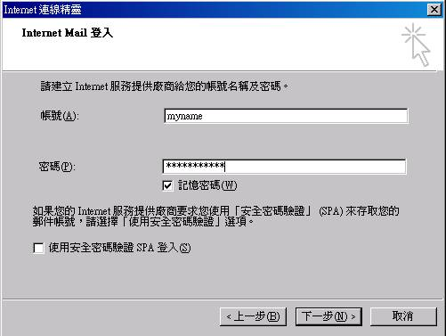

| 在这个邮件服务器的架设中，我们首先谈论 Mail 与 DNS 的重要相关性，然后依序介绍 Mail Server 的相关名词，以及 Mail Server 的运作基本流程与协议，也会谈到相关的 Relay 与 邮件认证机制 等项目，这些项目对于未来邮件主机的管理与设定是重要的，请不要忽略了这方面问题的讨论喔。当然，主要的目的还是在于架设 Sendmail 这个使用最为广泛的邮件主机服务器软件！这里我们以 Red Hat 7.x 以及 Red Hat 9 为主体来说明 Sendmail 的主要架构，要说明的是，虽然本文是以 Red Hat 为主体，但是 Sendmail 的架构仍然可以在其它使用 Sendmail 的 Linux 系统当中成立的。而重头戏则在最后面的 Tarball 安装一套完整的 Sendmail 喔 ( 我是以 Mandrake 9.0 及 Red Hat 7.x 版本来测试的 )！如果您的 Linux 上面本来就没有 Sendmail ，并且您还是习惯 Sendmail 这个套件，那么，这篇文章仍然相当的适合您查阅！ |
电子邮件带来的好处：
在目前的社会当中，没有电子邮件 ( e-mail ) 似乎是蛮奇怪的一件事！。可以说，现在 e-mail 已经成为一个很普遍的人与人之间的沟通管道了，电子邮件可以很快速的帮你将文件或讯息传送到地球上的任何一个有网络存在的角落，当然，你也可以在任何有网络的地方，连上 Internet 去收取你的信件！很快乐不是吗？是的！e-mail 的存在是相当重要的，你可以藉由这个电子邮件取得最实时的一手数据！你也可以利用他帮你联络好朋友，还可以用来把马子哩！君不见前一阵子相当有名的『电子情书, You got a mail』这部电影吗？呵呵！反正，电子邮件真的带给目前繁忙的人们一个相当轻松获得信息的方式！
电子邮件衍生的问题：
不过，遗憾的是，只要是有人类的地方，就会有很多你意想不到的事情会出现了，当然，e-mail 也不例外，怎么说呢？ 我们来慢慢的分析一下吧：可怕吧！电子邮件会衍生出这么多的问题说～
- 电子邮件夹带病毒：你可以常常听到电子邮件所夹带的病毒对吧！没错，利用电子邮件以及人们对于电子邮件的漫不经心的态度，使得以电子邮件为媒介的计算机病毒更容易『深入人群』当中龋≌飧鑫侍庠斐纱蟠笮⌒〉纳撕Γ如果发生在大企业当中，那可真是受不了那～那个主管受的了一天到晚计算机重新安装的～而且万一中毒的是大型主机，光是数据的损毁就可能让公司倒闭了....
- 怪客入侵事件：没错！ e-mail 也是一个相当不安全的网络协议，你可以轻易的使用怪客软件 ( Cracker ) 就可以取得使用者在利用 e-mail 传送过程当中的，将他的账号与密码撷取下来，分析之后，并进一步的破解对方的邮件主机～哇！真是乱可怕一把的！
- 广告与垃圾信件：这个可说是目前各大 ISP 心中永远的痛～这些垃圾信件可以占掉很多那少的可怜的频宽，使得正常使用者联机速度与质量下降，更可能造成网络的停顿～当然，常常收到垃圾信件的你，大概也不好过吧！
- 暴力攻击事件：万一你没有将邮件主机设定好，嘿嘿！送信者可以藉由你主机收信的功能，发送大量的信件，让你『一次收个够！』灌爆你的主机硬盘，想要不当机都粉难～
- 真实社会的讨厌事情：『黑函』！听到会不会很害怕？当然很害怕啦！偏偏，使用 e-mail 就可以作很多的坏事～这真是太不道德了～
- 不实的信件内容：只要注意到消基会的讯息就可以知道啦，不明来源的电子邮件说的内容，嘿嘿！不要轻易的相信，因为，很多可是以讹传讹，结果，大家都被耍了的～例如，你的朋友收到一封信，认为『哇！这是大事情』，所以在没有求证的情况下，将信『转寄』给你看，嘿！你的朋友寄给你的，当然要相信他啦！立刻再转寄，如此一再地循环，嘿嘿！这个错误内容的讯息马上就让大家知道，更可怕的是『还会让大家接受～』所以，看到任何讯息时，请千万要记得求证一下龋
网管人员的痛：
因为 e-mail 的便利性，与邮件主机的容易受到恶意的攻击，这两个事件真的是很难分的清，怎么说呢？如果为了使用者的便利性而大开便利之门，那么，您的邮件主机大概用不了多久，就会被列入黑名单之中，进而成为大家的拒绝往来户，呵呵！反而成为笑柄，并且反而造成了使用者的不便～而如果管制得太严格，又显的不够人性化～最起码，你的主管就会不太满意～怎么办呢？！哈哈！没错啦！邮件主机就是这么回事～让人又爱又怕的一个玩意儿，搞的定他，恭喜你，一切圆满顺利，搞不定他，主机被当成垃圾信件转运站事小，丢掉工作可就『兹事体大』啦～就因为他是这么重要，但是又这么难以搞定，所以啦，我们可要好好的学一学他龋
既然要使用 e-mail ，当然就需要邮件主机服务器 ( Mail Server )！不然你的信要怎样寄出去呢？事实上，mail server 的原理说难不难，但是说简单吗～似乎又有点难以理解ㄋㄟ～，所以，底下我们要来谈一谈他的原理部分，然后再针对主机的设定来进行说明咯！底下，我们首先要讲的，就是『Mail server 系统与 DNS 系统有什么关连性？』这个部分新手最容易被搞混哩，是否要架设 mail server 就『宿命』的一定得架设 DNS 主机在你的主机上面吗？
Mail 与 DNS 系统的相关性：
一直以来，Mail server 与 DNS 系统就是分不开的，怎么说呢？今天如果你要寄电子邮件的话，那么就得藉由邮件主机帮你将信件送出去，对吧！那么我们在 DNS 那个篇幅里面也谈到了相当多的概念了，就是，人脑实在无法记忆住计算机网络的 IP 数据，因此，才会有所谓的 Domain Name System, DNS 主机，这个 DNS 主要的功能之一，就是将主机名称转译成为 IP ，我想，这里您应该也已经了解了，对吧！如果是『不了解』，那么不要往下看了，请前往 简易 DNS 服务器 去瞧一瞧，瞧完了再回来继续吧！OK！好了，既然如此的话，那么使用邮件主机来寄信，并且不想要背主机所在的 IP ，那M就一定需要让你的主机名称可以经由 DNS 系统来找到你的 IP ！对吧！没错，如果你真的要提供一个 Internet 上面的邮件主机，最好还是注册一个合法的主机名称，比较好记忆ㄋㄟ～
好了，接下来要讨论的就是，既然我的主机需要 DNS 来转译主机名称使成为 IP ，那么我真的就得必须要架设 DNS 吗？当然不是！要注意的是，我们刚刚提到的是『我就得在 Internet 上面注册一个合法的主机名称来对应 IP 』而不是『一定得要架设 DNS 在我的主机上面！』这个很重要，因为有太多的新手被 mail server 与 DNS server 的关系搞错乱了！如果到这里又混乱了！那么请，真的，一定，回到 DNS 服务器那篇去慢慢的再从头读一次，否则.....也就是说，我们需要的是『合法注册过的主机名称』就是了！所以，你可以使用动态 IP 去申请一个动态 IP 的领域名称，也可以使用各大 ISP 提供的各项功能来注册，反正只要能够注册一个领域名称就是了！当然，你也可以自行去注册一个 DNS 主机，并且在你的主机上面建立 DNS 系统，但这并非是必要的！
那么，假设我的主机名称对应 IP 已经成功的在 Internet 上面完成合法注册了，这样就好了吗？是这样没错啦！确实，只要有主机名称对应到 IP ，亦即是有 A ( Address ) 这个 DNS 的标志后，那么就可以架设 mail server 了，并且，一般来说，应该不会有问题的！然而， DNS 系统本身还有其它的功能可以支持 mail server ，使 mail server 更稳定与具有更佳的避免信件遗失功能，所以，就有 MX 这个 DNS 的标志产生啦！MX 这个 DNS 设定中的标志，主要就是要给 mail server 用的，基本上， MX 就是 Mail eXchanger 的缩写，他可以让 Internet 上面的信件马上找寻到 Mail 主机的位置，此外，由于 MX 后面可以接数字，因次，一个 domain 或者是一部主机，可以有多个 MX 标志，这有什么好处呢？主要的好处就是可以让，当主要的 mail server 挂点时，由于有 mx 标号，因此，信件不会直接退回，而是跑到下一个 MX 设定的主机去，并且暂存在该处，等到主要的 mail server 起来之后，这个 MX 设定的主机就会将信件给他传送到目的地！如此一来，甚至可以达到异地备援的功效呢！不只如此喔！MX 的功效还很多！最大的优点就是有点类似 router 的功能，我们或许可以称之为 邮件路由 吧！当有了 MX 标志之后，由于这是 DNS 的设定，所以当你要传送 mail 的时候，那么就可以直接依据 DNS 的 MX 标志直接将信件传送到该设定的 mx 邮件主机，而不需要去寻问到底邮件要寄到哪里去！这功能相当的不错的！因为可以让你的邮件很快的而且正确的送达到目的地呢！此外，由于可以设定多个 mx ，因此，假设『此路不通』，也就是先使用的 mx 邮件主机不通的时候，那么信件就会往下一个 mx 邮件主机传送！这样可以避免信件被退信的机会！当然就更加的稳定！不过，这里也要特别强调， MX 『一定』要设定正确，否则，呵呵！反而会让你的信件永远在 Internet 上面流浪呢！
一般来说，邮件地址的写法为： account@server.name 的写法，在小老鼠 ( @ ) 前面的指的是『账号』，至于 @ 后面的则是主机的名称！当你寄出这样的一封信时，首先，你的邮件主机会先去 DNS 系统寻找 server.name 这个主机名称对应的 IP 与 MX 标志，若有 mx 标志，那么这封 e-mail 将会把信先送到该 mx 主机，然后再由该 mx 主机将信件送达目的地 ( 就是 server.name 这个主机啦 ) ，而如果有多个 mx 标志时，那么这封 e-mail 会送到最优先的 mx 主机去(也有可能这部主机就是目的地主机喔！)，然后交给该主机来处理！而如果没有 mx 标志的话，那么在查得 IP 之后，信件才会慢慢的送达该邮件主机！在送达到邮件主机后，该主机则以前面的『账号』将信件发送到各个使用者的邮件目录下！所以，为什么说 mail 与 DNS 系统相关性很高呢？嘿嘿！由上面的说明您应该就不难了解啦！ ^_^
邮件的传送流程、MUA、MTA、MDA
约略了解了 DNS 与 mail server 之间的关系之后，在接下来我们要了解的是，那么 mail 到底是如何传送到目的邮件主机的呢？底下我们分成『寄信』与『收信』两个主要的邮件主机使用方式来加以介绍！先说明一下关于『寄信』的部分好了，通常我们都是使用桌上型计算机来寄信的，举个例子来说好了，如果你以 Netscape 或者 Kmail 或者 OutLook Express 来寄信的时候，那么那封信到底是怎么送出去的呢？可以参考一下底下的图示来说明：
图一、电子邮件以邮件主机寄送信件示意图
先来说明一下什么是 MUA, MTA 与 MDA 什么的，再来说信件怎么传送的好了！
- MUA ( Mail User Agent )：顾名思义， MUA 就是『邮件使用者代理人』，华特(what)？邮件还需要代理人，怎么回事呢？喔！这是由于通常我们 Client 端的计算机都无法直接寄信的(不然干嘛要邮件主机？)，所以，需要透过 MUA 来帮我们传达信件，不论是送信还是收信，Client 端的用户都需要透过各个操作系统提供的 MUA 才能够使用邮件系统。举个例子来说， Windows 里面的 OutLook Express, Netscape 里面的 mail 功能与 KDE 里面的 Kmail 都是 MUA 啦！ MUA 主要的功能就是收受邮件主机的电子邮件，以及提供使用者浏览与编写邮件的功能！
- MTA ( Mail Transfer Agent ) ： MUA 是用在 Client 端上面的软件，那么这个 MTA 就是用在邮件主机上面的软件啦！他也是主要的邮件服务器喔！这个 MTA 就是『邮件传送代理人』的意思。也来顾名思义一下，既然是『传送代理人』，那么使用者寄出的信，与使用者要收信时，就是找他 ( MTA ) 就对啦！因为他要负责帮我们使用者传送嘛！没错！基本上， MTA 的功能有这些：
- 收受外部主机寄来的信件：既然是邮件主机，那么『接收信件』想必就是主要的功能！呵呵，答对了！所以， MTA 最主要的功能就是收受外部来的信件，只要这个信件里面有 MTA 内部的账号时，那么这封信就会被 MTA 收下来；
- 帮使用者传送 ( 寄出 ) 信件：既然可以收信，那么自然也就可以发信！没错啦！只要使用者具有合法的使用 MTA 的权力，那么该使用者就可以利用这部 MTA 将他把信传送出去！不过需要注意的是， MTA 会将信件送给目的地的 MTA 而不是目的地的 MUA 喔！不要搞错了！(注：曾经有个朋友跟我说，要我传数据给他，而因为他要接收我的信件，所以他的计算机 "指的是 Windows 那个 Client 端的计算机" 得一直开着，真是不方便！听到这句话时，害我吓了一跳～这个观念是不对的～因为使用者使用的是 MUA ，而信件『仅会送达到 MTA 主机上面』而已，收、发信件时，都需要透过 MTA 来帮忙处理的！所以，使用者在使用邮件编辑器"MUA"将数据编辑完毕之后，按下送出，并且成功的送到 MTA 之后，接下来的事情就是 MTA 的工作了，跟使用者的 Client 端这部计算机 "一点关系也没有了" )
- 让使用者自己的信可以收回去：使用者可以将放置在邮件主机的信件收到自己的个人计算机上面收看。
大致的功能就是这些啦！通常我们所说的 Mail server ( 邮件服务器 ) 就是指 MTA 而言的！
- MDA ( Mail Delivery Agent ) ： 『邮件递送代理人』主要的功能就是将 MTA 所收受的信件，依照信件的流向 ( 送到哪里去 ) 来将该信件放置到本机账户下的邮件档案中 ( Mailbox )！或者是再经由 MTA 将这个信件送到下个 MTA 去！而如果信件的流向是到本机当中时，这个邮件代理人的功能可不止是将由 MTA 传来的邮件放置到每个使用者的 Mailbox 而已，他还可以具有邮件分析 ( filtering ) 与其它相关的功能呢！这个功能很了不起喔！怎么说呢？具两个例子来说好了：
- 如果你知道某个广告信件的主旨都是固定的，例如『AV情色XXX』，你想将这种信件直接给他丢掉垃圾桶，可以吗？当然可以！透过 MDA 邮件分析的功能，就可以将信件丢弃啦！
- 如果有一天你要出差去，看样子可能一个星期碰不到电子邮件了，但是你又不想让一些朋友认为你在耍大牌都不回信的....这个时候你就可以利用 MDA 的功能，让邮件主机分析到，当要送给你这个使用者的账号的信出现时，就自动回复一封回信，让寄件者知道你在忙碌中....呵呵！这样的功能是否很不错呢？还不止这样喔！其它的等一下后面再提吧！
好了，了解了 MUA, MTA 与 MDA 之后，再来说到那么如何将信寄出去呢？可以分为底下几个步骤：
- Mailbox ：『邮件信箱』说穿了，就是在你主机上面的一个目录下的，某个人『专用』的信件收受档案啦！举个例子来说，系统管理员 root ，在预设的情况下，他会有个信箱，预设的档案是在 /var/spool/mail/root 这个档案就是了，一个账号都会有一个自己的信箱喔！然后，当 MTA 收到 root 的信时，就会将该封信件存到 /var/spool/mail/root 这个档案中！使用者可以透过程序来将这个档案里面的信件数据读取回去喔！
整个流程大致上就是这样。这个时候，你由左上角的 MUA 将信件寄出之后，最后信件将会存放在右边那部 MTA 主机里面喔！还没有到达你的朋友的计算机 ( 就是右边的 MUA 那部计算机 ) ！这个时候，就要继续谈到收信的动作了！收信的动作有点像这样：
- Step 1 使用者利用 MUA 寄信到 MTA 上面：通常我们使用 MUA ( 例如 Outlook express ) 写信的时候，你总是要定义出几个咚咚：
好了，你在图一左上角的那部机器上面，也就是『本地端用户使用计算机』利用 MUA 的功能 ( 例如 Outlook express 好了 ) 写好了信之后，按下 MUA 的那个『传送』的按键，MUA 就会依据你所定义的主机地址将信发送到 MTA 上面；
- 发信人与发信网站：对啦，总是要有这个信息才行的嘛！这个发信网站就是等一下 Step 2 接收信件的那个 MTA 啦；
- 收信人与收信网站：是的，就是 account@e-mai.server 的样式啦！那个 account 就是该 e-mail.server 里面的账号啦！
- Step 2 MTA 收到自己的信件，交由 MDA 发送到该账号的 MailBox 当中：如果在 Step 1 所收到的信件中，那个 e-mail.server 就是 MTA 自己，此时 MTA 会将该信件交由 MDA 去处理，将信件放置在收进者的信箱中；
- Step 3 MTA 将信再转送出去：如果由 Step 1 来的信件的收件人并不是 MTA 的内部账号，那么该封信将会被再转送出去！由 Step 1 及 Step 3 的动作，我们也称为 Relay (邮件转递) 的功能喔！
- Step 4 远程 MTA 收受本地的 MTA 所发出的邮件：远程的 MTA 会收受我们这部 MTA 的信件，并将该信件交给他的 MDA 来处理 ( Step 5 ) ，此时，信件会存放在远程的 MTA 上面，等待使用者登录读取或者下载回去！
图二、客户端收受邮件主机的电子邮件示意图
远程用户使用的计算机直接连接到他的 MTA ，跟 MTA 要求察看自己的 mailbox 是否有信件，而 MTA 透过 MDA 去检查之后，如果有信件的话，就会将他传送回使用者的 MUA 中！同时，根据 MUA 的不同设定， MTA 会选择将该 mailbox 清除掉，或者继续保留！若继续保留的话，那么下次使用者再次的接收信件时，保留的信件会再次的被下载，因此，通常使用者 MUA 都是预设删除掉 MTA 上面的 Mailbox 内容的！接下来我们得谈一谈，那么寄信与收信使用的是什么协议呢？
使用的协议
总是得了解一下使用的协议龋∥颐窃诩男诺氖焙颍亦即由 MUA 将信件发送到 MTA 的过程中，以及 MTA 将信转递到下一个 MTA 的功能，目前绝大部分的邮件主机都是使用 SMTP ( Simple Mail Transfer Protocol ) 这个协定，port number 为 25 啦！在寄信的时候，你的 MUA 会主动的连接 MTA 的 port 25 ，然后将信经由 MTA 的 smtp 协议 ( port 25 ) 而送出去！而邮件主机 MTA 在转递的时候，也是经由下一部 MTA 的 port 25 来将信送出去的！所以，不论你是使用什么 MUA 或 MTA 邮件架设软件，只要大家都支持 smtp ，那么信件就可以顺利的流传！
收信呢？收信则是 MUA 经由 POP ( Post Office Protocol ) 协议来连接到 MTA 的使用者 Mailbox，以读取或者下载使用者在 Mailbox 当中的信件。，目前常用的 POP 协议为 POP3 ( Post Office Protocol version 3 )，这个协议产生的 port number 为 110 ，所以，你的 MUA 经由 MTA 的 port 110 将信件由 MTA 的 mailbox 当中将信件收到本地端的 MUA 上面供你浏览！同样的，只要 MTA 与 MUA 同时支持 POP3 这个协议，那么信件就可以自由的收受了！此外，目前也很流行使用 IMAP 这个协定来收受信件。在 pop3 的收信协议中，一般来说，当 client 端收完了主机端的信件之后，则该信件会主动的被主机端所删除！不过， IMAP 则可以避免这个问题！ IMAP 具有让使用者 ( client 客户端 ) 自行定义信件放置的目录功能，以及是否要储存下载的信件之后，原信件是否保留在主机上面的功能！目前我们常见的 Web 接口的电子邮件使用，大部分就是以 imap 来达成的！
所以我们知道了！通常一部提供收发信件的 MTA ( 不考虑 Web 接口的邮件主机 ) 至少需要两个协议，分别是 SMTP 与 POP3 ！而且，只要你的 MUA 与 MTA 同时均支持 SMTP 与 POP3 ，那么彼此就可以沟通！这也是为什么你使用 Outlook express 寄出的信，但是你的朋友可以使用 Netscape 收下来的原因！总之，就是『网络协议』的沟通啦！
什么是 Relay 与认证机制
由图一的寄信流程图里面的第三步骤 ( step 3 ) 中，我们知道， MTA 在分析收到的邮件之后，如果收件者不是本身主机的账号，则会将该信件再传送到下一个 MTA 上面，这个由 MTA 帮忙转信的功能就称为 Relay 啦。那么在这个功能当中，您有没有发现一件奇怪的事情啊！那就是：『是否任何人都可以使用我的 MTA 邮件主机服务器来传送他的邮件呢？』这个问题涉及到 Mail Server 的设定技巧了！如果设定不良的话，例如早期的 Sendmail 版本中，他就没有针对使用者来进行管制，也就是说，任何人都可以使用这样的一部邮件主机来达到信件传送的目的！这种主机我们称为『Open Relay』的电子邮件主机喔！这里请仔细的思考一下，如果我的 MTA 对于寄信的人没有一个限制的话，结果会如何呢？呵呵！没有错，结果就是任何人都可以使用你的 MTA 来发信了！那有什么好可怕的？我们在前言的地方就已经稍微说过了，那个所谓的『广告信、垃圾信件』的问题，而如果你的 MTA 没有对寄信的人作限制的话，由于任何人都可以使用你的 MTA 来发信，你的 MTA 将会变的『很笨重！』什么意思？那就是，你的 MTA 将会帮任何人寄信，如此一来，你的『网络频宽将会被广告信件所用光！』结果将导致你的 MTA 变成『Open Relay 主机黑名单的一份子～』！！！
为了避免这个问题，所以，目前所有新版的邮件主机服务器架设软件 ( Mail server packages ) 预设的情况之下，都不会对外完全的开放 Relay 的功能的！预设通常仅『针对主机 ( localhost ) 开放 Relay 的功能！』，不过，这样的 MTA 是可以收受来自 Internet 上面的，注明收件者是我们 MTA 主机内部账号的信件的，因此， MTA 在『收信』上面是没有问题的！
但是关闭了 Relay 之后，虽然可以避免掉我们 MTA 主机被当成广告信发送站，不过如此一来又造成了一些困扰！何解？因为通常我们仅针对主机，或者一些规范的 IP 或者是网段等信任的主机来开放他们的 Relay 的功能，所以在这个设定的范围内的 Client 端计算机可以自由的收发信件，至于没有规范到的 IP 来源的寄信信件，将完全的挡掉。然而万一您使用的是 ADSL 计时制的呢？又或者您是常常在外面出差的大老板，则你的 IP 将『不会固定』，完蛋啦～怎么办？既不能完全开放 Relay ，又没有固定 IP ，无解了吗？呵呵！还好，有所谓的 邮件认证机制 来帮我们解决这个困境啦！
所谓的『邮件认证机制』就是在刚刚我们图一的寄信流程图中，在 MTA 当中加入需要检查发信者的『账号与密码』比对的功能，当 MTA 接到来自 Client 端的传信需求时，会检查来自 Client 端的认证比对(账号密码)，如果账号与密码比对正确，则开始接受信件并帮忙转信，如果比对不正确则将该 MTA 并不会接受该封信件，直接在 Client 端显示『不接受您的信件』之类的讯息喔！目前有相当多种的邮件认证机制，这里我们偏向于介绍目前广为使用的 SMTP 邮件认证这个机制。
所谓的 SMTP 邮件认证机制，顾名思义，就是在 smtp 这个协定上面动手脚的一个机制！亦即是在寄信的时候，(由 MUA 到 MTA 那个 step 1 的步骤中 )，我们的 MTA 主机『一定要求检验 MUA 发信者的账号与密码！』这样的功能！果真能做到这一点的话，那么你的 MTA 就可以在经过认证之后，提供认证者的 Relay 功能，而不需要针对某些信任网域或 IP 来分别设定开放 Relay 的功能啦！因为经由『认证』的机制，你的 MTA 会去分析寄信者的相关信息，通过后才会接受信件并帮他们寄信，否则就不接受信件！呵呵！没错！就是这样！透过这样的机制，您将不需要规范 Relay 的 IP 或网段，直接交给 SMTP 邮件认证来帮你管理你寄件者的 Relay 功能，从此以后，你的 Clients 就不会常常向你抱怨说 MTA 不稳定！
我们底下将介绍使用 cyrus-sasl 这种密码验证的认证机制！好了！底下我们将要介绍一下目前邮件服务器占有率上面应该依然是第一的 sendmail 这个 mail server 的架设！
使用 RPM 来安装 Sendmail 实在是『快乐得不得了～』太简单了～目前提供 Sendmail 做为邮件主机服务器的主要为 Red Hat 这个 Linux distribution ，至于其它的 Linux distribution 是否提供 Sendmail 就得请您自行到该官方网站上面查询一下！底下我们主要是以 Red Hat 7.x 以及 Red Hat 9 的 Linux 系统做为 Sendmail 的介绍，此外， OpenLinux server 3.1.1 亦是使用此一相关功能套件的喔！那么需要安装哪些套件呢？还记得我们在 Mail Server 使用的协议里面谈到的几个基本的协定吧？亦即是 SMTP 与 POP3 这两个，此外，由于 Sendmail 必须『读入』一些数据库格式，所以也必须要安装相关的数据库的函式库喔！
不过，如果您的系统是比较老旧的，例如 Red Hat 6.x 以前的版本，又或者是您的系统本来就不存在 Sendmail ，例如 Mandrake 等其它版本的 Linux distribution 时，那么您就得使用 Tarball 的方式来安装了！ ( 事实上，几乎所有的 Linux distribution 都会纳入 sendmail ，只是有些套件，例如 Mandrake 预设是安装 postfix 就是了！ ) 安装 Tarball 的 Sendmail 真是一件很『雪特』的苦差事，而且安装的不够好的话，还有可能产生一些设定上的困扰，此外，安装的过程当中，使用到很多的『天书一般的设定档案与牛屎一般的一大沱设定数据』，这些数据如果没有一定程度的 Sendmail 架构知识，是无法安装起来的，还有还有， Tarball 安装的话，最好是所有的 Sendmail 相关套件都一起安装，而不是分开来安装，所以，鸟哥将 Sendmail 的 Tarball 安装方法放在最后面，希望您至少看完『主机的设定』该节的完整内容，以及浏览过『关于邮件主机安全的设定』之后，再来尝试以 Tarball 完整的安装起属于您自己的 Sendmail 邮件主机喔！
好了，底下我们就来安装 Sendmail 及 POP3 这两个邮件服务器上面的组件吧！
使用 RPM 安装 sendmail ( 适用于原本 Linux 就是使用 sendmail )
如果您是使用 Red Hat 7.3 以前的版本，例如 Red Hat 7.1, 7.2, 7.3 ，或者是 Open Linux Server 3.1.1 的话，那么请先确定一下底下的套件是否已经安装上去了呢？
[root@test root]# rpm -qa | grep sendmail
sendmail-cf-8.11.6-3
sendmail-8.11.6-3
# 若有属性相依的问题时，请将您的原版安装光盘拿出来， mount 上去后，
# 仔细的，一个一个的将相依的套件安装上去！ ^_^
[root@test root]# rpm -qa | grep m4
m4-1.4.1-5
[root@test root]# rpm -q mailx
mailx-8.1.1-22
那个 sendmail 就是主要的邮件服务器程序， sendmail-cf 是一些设定档案， 这两个套件是『一定』要安装的！至于那个 m4 的套件，则是转换 sendmail 设定文件的一支程序！也要安装喔！而那个 mailx 就是提供最简单的 mail 这支寄信与收信的套件啦！由于我的测试系统是 Red Hat 7.2 ，所以使用的算是比较旧一点点的 sendmail 8.11.6 版，如果您想要换装新版的 sendmail 8.12.xx 的话，请参考底下『Tarball 完整安装 Sendmail 服务器』的步骤！不过，这里我们先还是玩一玩这个预设的版本即可！记得喔！安装完毕之后，请到 Red Hat 的网站上面去下载更新的 RPM 来更新吧 http://www.redhat.com/apps/support/errata/！或者是台湾的映射站喔！ftp://linux.sinica.edu.tw/pub1/redhat/updates/
使用 RPM 安装 IMAP 套件
这个 IMAP 套件，就是负责收信的 POP3 那个协定啦！请使用 RPM 确认他已经安装在您的系统上面！
[root@test root]# rpm -qa | grep imap
imap-devel-2001a-1.72.0
imap-2001a-1.72.0
那个 imap 就是我们主要的 POP3 那个协议的套件！如果您是使用 Open Linux 的话，那么设定档应该会是在 /etc/inet.d 内，而如果是使用新的 xinetd 的话，那么设定档就会是在 /etc/xinetd.d 里面！等一下我们再来好好的谈一谈啦！ ( 注：本章节并没有谈到 imap 这个协议的设定与应用，事实上， imap 这个套件同时提供了 pop2, pop3, imap 等协议的设定与相关功能喔！ )
知道如何安装 Sendmail 之后，接下来，我们得了解一下在邮件服务器架设之前，您需要先进行什么样的工作呢？好了，既然是玩 Sendmail ，那么就得了解一下 sendmail 的相关档案与说明！
- 若想要架设的邮件主机未来是对 Internet 提供服务的，那么请确定您已经申请了『主机名称』或者已经具备有『经过合法授权的 DNS 主机』的服务了！重要的地方在于你的主机必须能够让大家在 Internet 上面查询的到啊！
- 虽然有 A 这个 DNS 的标志就可以架设 Mail server ，不过，毕竟有 MX 标志还是比较好的，所以，特别提醒大家，如果要架设 Mail Server ，最好(非必要)还是请您的上层 DNS 主机帮您设定 MX 标志，或者，您自己拥有 DNS 主机管理权时，可以自行设定 MX 这个标号才好！
Sendmail Server 的档案架构与基础说明
Sendmail 几乎所有的设定档都安置在 /etc/mail 底下，不过，如果你是以 RPM 安装的话，那么还有所谓的 sendmail-cf 的设定档，这个就是使用 M4 在进行 sendmail.cf 设定的程序！由于 Sendmail Server 所使用到的套件并不少，这包括有 sendmail, imap 以及 m4 等等，我们针对这些套件来谈一谈每个目录与档案下的数据吧！
- 设定档：
Sendmail 的设定档几乎全部都在 /etc/mail 底下，但是也不一定！因为还需要看当初你建立 sendmail.cf 这个主要设定档时，将各个档案放置的地点而定！这部份可以使用 RPM 的方式来反查出你的设定档案的路径。Sendmail 与相关套件的设定档与相关的说明为：
- /etc/mail/sendmail.cf 或 /etc/sendmail.cf：这个就是 sendmail 的主要设定档，所有的参数都是他在管理的！但是，这个档案内的各个设定被号称为『天书』，所谓的天书就是『非一般人看的懂得！』，就连 sendmai 官方网站自行开发出来的设定程序也都『告诫大家不要手动编辑这个档案』，所以这里我们也不谈这个档案的内容啦！但是既然这个是主要设定档，那么又不要让大家手动编辑，那我要怎样进行 sendmail 设定的修改呢？这个时候就需要使用到 M4 这个指令了！ m4 可以将简单的一些环境设定参数，重新以内定的函式库或者函式定义来『制作』 sendmail.cf 这个设定档呢！sendmail 预设的 sendmail.cf 放置在 /etc/mail/sendmail.cf ，但是某些 Linux distributions 则将他改放在 /etc/sendmail.cf 这里～
- /usr/share/sendmail-cf/cf/xxxx.m4 ：刚刚我们提过那个 sendmail.cf 对吧！而由于这个档案最好不要手动修改，所以需要使用到 m4 这支程序。 m4 可以将一个简单的环境设定档转成 sendmail.cf ，那个环境设定档就是 sendmail-cf 这个套件所提供的啦。在 Red Hat 7.x 的系统中，主要的环境设定档就是 /usr/share/sendmail-cf/cf/redhat.mc 这个档案喔！不过，在 Red Hat 7.3 以后的所有 Red Hat Linux 版本当中，这个档案被移动到 /etc/mail/sendmail.mc 了！至于其它的 Linux 版本则请参考你的 sendmail-cf 套件的内容！
- /etc/mail/local-host-names ：这个档案主要用来处理一个主机同时拥有多个主机名称时候的收发信件主机名称问题。这个档案的用途可大了！当你的主机拥有多个 HOSTNAME 的时候，例如我的主机拥有三、四个主机名称，那么是否每个名称都可以用来做为收受信件的主机名称 ( To: .. ) 呢？并非如此！如果你的主机名称为 test1.your.domain 以及 test2.your.domain ，而且这两个 hostname 您都希望可以用在收受电子邮件，果真如此，那么，你就必需将这两个名字都写入 local-host-names 这个档案当中，一个主机名字占用一行。注意：没有写入这个档案的『你的主机名称』，那信件将无法正确的寄达这部主机喔～例如：www.vbird.adsldns.org、vbird.adsldns.org这两个主机名称的 ip 都是相同的，也就是指向同一台机器上。假设这台主机名称预设为 vbird.adsldns.org，那在预设情况下，寄给 userid@vbird.adsldns.org 都是 ok 没有问题的！但是寄给 userid@www.vbird.adsldns.org 就会出现错误。其中原因是因为没有告诉 MTA 除了 vbird.adsldns.org 这个主机名称外，还有 www.vbird.adsldns.org 也是指向这台主机上。所以寄给 userid@www.vbird.adsldns.org 会出现错误，通常就是 mail loop to me，要不然就是不允许 relay 的错误情况。
- /etc/mail/access.db ：这个是『规定谁可以或不可以使用本邮件服务器的数据库』，要转成这个数据库需要藉由 makemap 以及 /etc/mail/access 档案的配合！这个档案可以说是 Sendmail 里面最重要的『使用者权限管理』的数据了！在后面我们会继续说明。
- /etc/mail/aliases.db 或 /etc/aliases.db ：这个 aliases.db 是用来设定『信箱别名』的一个咚咚！你可以藉由这个档案的设定来规范你的『群组收信』喔！不过，还需要藉由 aliases 及 newaliases 来做成这个档案才行！
- /etc/mail/statistics ：这个档案在记录 Sendmail 收发信件的相关信息喔！
- 执行档：
Sendmail 的执行档也不少，得说一说：
- /usr/sbin/sendmail：就是 sendmail 的主要执行档啦！他会读取 sendmail.cf 这个档案的设定内容喔。你在发送信件时，就是使用这支程序啦！启用这支程序之后，预设的启用的 port 是 25 咯。
- /usr/sbin/ipop3d：sendmail 的功能是在处理寄信问题，而 ipop3d 就是处理 client 的收信问题啦！如果你的 Mail Server 希望提供客户端使用 Netscape 或 OutLook express 来收信，那么就需要提供这个服务才行！这个服务的设定档在 Red Hat 当中是在 /etc/xinetd.d/ipop3 ，如果是 Open Linux server 3.1.1 的话，那就会变成在 /etc/inet.d/imap 这个档案中。注意： pop3 是由 imap 套件所提供的，并没有包含在 sendmail 套件之中喔！
- /usr/sbin/makemap：主要将 access 转成 access.db 的数据库制作的执行文件；
- /usr/sbin/mailstats：将 /etc/mail/statistics 档案读出来的一支程序！可以查看到目前为止 Sendmail 工作共传送、接收多少邮件！
- /usr/bin/newaliases：将 /etc/mail/aliases 转成 /etc/mail/aliases.db 的执行档！
- /usr/bin/mailq：用来观察 /var/spool/mqueue 这个邮件暂存目录的数据情况的指令！
- /usr/bin/m4：这个就是将 *.mc 档案转成 *.cf 档案的主要执行档！需要搭配 sendmail 原始码，或者是 sendmail-cf 这个套件才行！注意： m4 是也需要额外的安装的一个套件喔！sendmail 原本套件中并未包含 m4 这个套件！
- 邮件相关目录：
sendmail 接收下来的邮件放置在哪里呢？
- /var/spool/mail ：这个是邮件『收受下来之后，每个使用者信件放置的目录』，一个账号会使用掉一个档案，例如你的账号为 test ，那么你的信在 Server 中时，就是 /var/spool/mail/test 这个档案了！此外，你的 POP3 的协议亦是使用这个目录中的 mailbox 做为预设的邮件取得的档案数据。
- /var/spool/mqueue：当邮件由于对方主机的问题，或者是网络的问题，而无法送出去时，那么该封邮件将会暂时的存放在这个目录下，然后主机会每隔大约 30 ~ 60 分钟重新尝试传送一遍，通常设定在五天内该封信件还寄不出去，那就会退给原发信者了！
- /var/spool/clientmqueue：这是新的 sendmail 8.12 版本才会出现的队列目录 (您如果想要以 tarball 安装 sendmail 的话，请务必参考本章底下的说明，这个目录的权限设定相当的重要喔！) 。
大致上的档案就是这样啦！接下来谈一下如何设定 sendmail 吧！
使用 m4 来简易设定 sendmail
一般来说，只要您在安装完了 sendmail 之后，您的 Mail Server 就可以正式的来启动了！但是不幸的是，在 Red Hat 7.xx 以后的版本中(包含 Red Hat 9)，为了杜绝广告信件的问题，所以在预设的情况下，您的 sendmail 将『只会监听 127.0.0.1 这个接口的收发信件需求！』至于非 Red Hat 版本的 sendmail 则可以正常的来启动喔！为了解决这个问题，所以我们势必要针对 sendmail.cf 这个设定档案来进行修订，但是这个档案原本即建议需要由 m4 来进行修改，所以，我们就得了解一下使用 m4 来转换成为 sendmail.cf 的设定档 file.mc 的相关参数！
- 建立 M4 参数档：
m4 的参数档通常档名均取为 filename.mc 这样的附档名格式，你可以在 /usr/share/sendmail-cf/cf 里面找到相当多的范例档案喔！例如 Red Hat 的设定范例文件为 /usr/share/sendmail-cf/cf/redhat.mc (如果是 Red Hat 7.3 以后版本，含 Red Hat 9 ，这个档案则放置在 /etc/mail/sendmail.mc 喔！)。这个环境参数设定文件的设定项目很多，其格式为：仔细看到上面的例子当中，在设定的组件后面接上小括号，而小括号内则为该设定组件的项目内容，以及该项目内容的参数！而将设定项目与各参数包起来的『并不是单引号』，要注意的是，在『设定项目』左右两边的：
设定组件(`设定项目', `参数一', `参数二')
这里很容易被搞错！请特别注意，而每个设定项目与参数之间，则是以逗号『,』来做为分隔喔！底下我们谈一谈几个主要的设定组件与各个设定组件底下的设定项目吧！
- 左边的是 quod ，也就是键盘上面数字键 1 的左边那个按键『`』；
- 右边的才是单引号『'』。
- divert ：这个组件仅是在于提供『是否要将说明数据(或者是批注数据)写入输出的档案中』而已，如果在 filename.mc 档案当中具有批注符号时，(注意， *.mc 的批注符号可以是 # 也可以是 dnl 这个字符串！)而你输出资料时不想将这些说明资料也输出，那就可以使用 divert (-1) 。反之，如果你想将这些说明数据同时输出，那就使用 divert (0)。由于我们不想要手动修改 sendmail.cf ，所以输出的数据当然就不太需要注明啦！只要在环境设定档 *.mc 里面说明清楚即可！因此，你应该会常常在档案当中看到 diver (-1) 才对！范例为：
divert (-1)各个设定组件我们先介绍到这里，至于更详细的说明，请务必到 /usr/share/sendmail-cf/README 这个档案当中寻找！至于其它更完整与新鲜的 M4 设定项目，请到 http://www.sendmail.org/m4/readme.html 查询喔！底下我们来聊一聊这个环境参数档设定完毕之后(或者称为 M4 scripts )，要怎样来『制作』sendmail.cf 呢？
- OSTYPE：这个组件功能在设定使用的操作系统类别！ Sendmail 预设提供数种操作系统的模式，你可以在 /usr/share/sendmail-cf/ostype 这个目录当中找到所支持的操作系统模式。因为我们是使用 Linux ，所以范例为：
OSTYPE(`linux')
- define：这个组件的作用比较多喔！他可以定义出许多有用的 sendmail 需要的参数，举个例子来说，如果我要将邮件别名设定档放置在 /etc/aliases 底下，那么我可以使用底下的范例：
那个 ALIASE_FILE 就是主要的设定项目啦！而这个项目主要规定邮件者别名的档案所在地，所以，后面就直接接上完整的文件名称啦！更多详细的 define 说明，可以参考您计算机中的 /usr/share/sendmail-cf/README 这个档案喔！
define(`ALIAS_FILE', `/etc/aliases')
- undefine：恰恰与 define 相反啦！ Sendmail 预设会支持定义很多的项目，而如果您不需要定义该项目，则可以使用 undefine 来将他移除掉喔！例如：
undefine(`UUCP_RELAY')
- FEATURE：这个组件 FEATURE 字面上的意思是『特征、特色』，那也就是说，这个组件里面会规定出 sendmail 所额外新增的一些任务啦！这些任务的支持必需要 sendmail 有提供才可以！你可以在 /usr/share/sendmail-cf/feature 这个目录当中找到 sendmail 所提供的各个功能喔！举个例子来说，如果我们要规定 sendmail 存取权限设定的档案，也就是 /etc/mail/access.db 时，你可以这样写：
注意：上面 access_db 是某个任务的项目，而后面接的 hash 是数据库格式，至于 sendmail 所使用的数据库则是 /etc/mail/access.db ！更多的 FEATURE 相关设定项目可以参考 /usr/share/sendmail-cf/README
FEATURE(`access_db',`hash -o /etc/mail/access.db')
- MAILER：这个组件在设定所使用的邮件主机传送邮件(递送, delivery)的代理人，一般而言，我们的代理人都是 smpt 协议啊，不过，如果我们主机内的用户(主机 /etc/passwd 存在的实体用户)想要使用 sendmail 来寄信，那是否仍然要透过 smtp 这个代理人呢？不太需要的， sendmail 本身就提供发信的功能，而要让主机上面的实体用户可以在登入主机环境的中使用 sendmail ，那你就必需要启动 local 这个本地端的邮件递送功能啦！因此，通常这个组件会设定为：
如此一来，当 sendmail 发现信件来自于主机内部，那就会使用 local 来传送信件，当信件来自于主机外部时，那才会使用 smpt 协议来寄信喔！未来还可以新增 procmail 这个 MDA 呢！ sendmail 支持的 MAILER 可以在 /usr/share/sendmail-cf/mailer 这个目录中查询的到！
MAILER(local)
MAILER(smtp)
- m4 程序的执行
m4 程序在执行的时候，必需要先读入相关的参数项目才行，这个参数项目在 /usr/share/sendmail-cf/m4/cf.m4 这个档案当中，因此，如果你的 *.mc 档案里面没有这一行：那么你就必需要执行两个档案的 m4 转换，否则只要执行一个即可！假设您的 m4 script 档名为 redhat.mc ，那么您可以这样转换 sendmail 所需要的 sendmail.cf ：
include(`/usr/share/sendmail-cf/m4/cf.m4')
Red Hat 7.2 以前版本：
1. 若 redhat.mc 里面没有 include 的项目，则：
[root@test root]# cd /usr/share/sendmail-cf/cf
[root@test cf]# m4 /usr/share/sendmail-cf/m4/cf.m4 \
> redhat.mc > redhat.cf
2. 若 redhat.mc 里面已经包含了 include 的项目，则：
[root@test cf]# m4 redhat.mc > redhat.cf
Red Hat 7.3 (含 Red Hat 9) 以后版本：
1. 若 sendmail.mc 里面没有 include 的项目，则：
[root@test root]# cd /etc/mail
[root@test mail]# m4 /usr/share/sendmail-cf/m4/cf.m4 \
> sendmail.mc > redhat.cf
2. 若 sendmail.mc 里面已经包含了 include 的项目，则：
[root@test mail]# m4 sendmail.mc > redhat.cf
上面制作而成的 redhat.cf 就是 sendmail.cf 的内容啦！然后请将你的 sendmail.cf 备份，举个例子来说， Red Hat 的 sendmail.cf 在 /etc/ 底下，所以我可以这样做：
[root@test cf]# mv /etc/sendmail.cf /etc/sendmail.cf.old
[root@test cf]# cp redhat.cf /etc/sendmail.cf
# 若是 Red Hat 7.3 以后版本，则
[root@test mail]# cp redhat.cf /etc/mail/sendmail.cf
这样就成功啦！
- 修改 Red Hat 7.x 以后版本 ( 含 Red Hat 9 )的设定档：
我们说过， Red Hat 7.x 以后版本的设定档里面已经将邮件来源的接口定义为『仅来自 127.0.0.1 这个界面』，所以我们必需要开放监听的界面才行！请注意，这里仅开放『监听』而不是开放 Relay 喔！如果您使用 Red Hat 7.1/7.2 ，那么请修改您的 /usr/share/sendmail-cf/cf/redhat.mc ，如果是 Red Hat 7.3 ，则修改 /etc/mail/sendmail.mc ！我们这里都以 sendmail.mc 为主来说明，如果您是使用 Red Hat 7.2 以前版本，请记得搜寻相关的档案喔！至于非 Red Hat 系统，例如 Open Linux ，则可以略过这个步骤喔！
1. 寻找档案的内容
[root@test root]# cd /etc/mail
[root@test mail]# vi sendmail.mc
找到下面这一段：
DAEMON_OPTIONS(`Port=smtp,Addr=127.0.0.1, Name=MTA')
将他改成
DAEMON_OPTIONS(`Port=smtp,Addr=0.0.0.0, Name=MTA')
储存后离开2. 重新制作档案：
[root@test mail]# m4 sendmail.mc > redhat.cf
[root@test mail]# mv sendmail.cf sendmail.cf.old
[root@test mail]# cp redhat.cf sendmail.cf
这样就大功告成！
启动 Mail Server
Mail Server 的启动是相当的简单的，在 Red Hat 的系统当中，你可以依序启动 sendmail 以及 POP3 这个服务喔：
1. 启动 sendmail
[root@test root]# /etc/rc.d/init.d/sendamil start
Starting sendmail: [ OK ]2. 启动 POP3 这个协定
[root@test root]# cd /etc/xinetd.d
[root@test xinetd.d]# vi ipop3
# 找到下面这一行：
disable = yes
# 将他改成
disable = no
# 储存后离开！至于更详细的说明，可以参考『基础学习篇的认识服务』喔！[root@test cf]# /etc/rc.d/init.d/xinetd restart
[root@test cf]# netstat -tl
Active Internet connections (only servers)
Proto Recv-Q Send-Q Local Address Foreign Address State
tcp 0 0 *:pop3 *:* LISTEN
tcp 0 0 *:smtp *:* LISTEN
看到了吗？这样我们的 Mail Serve 就已经启动了！他已经可以进行收信与送信的工作！事实上，如果您曾经以 vi 检查过 /etc/rc.d/init.d/sendmail 这个档案的话，你会发现他其实就是使用 /usr/sbin/sendmail 这支程序在工作的啦！他通常的指令下达方式为：
[root@test root]# /usr/sbin/sendmail -bd -q30m
参数说明：
-bd ： 表示将 sendmail 以 daemon (可以想成常驻内存的类型) 的类型启动！
-q ： queue 的意思，后面接的是时间参数，时间参数有：
s (秒) m(分) h(小时) 及 d(天)
-q30m 表示每隔三十分钟，会将放置在邮件队列 ( 一般是在 /var/spool/mqueue )
的邮件尝试寄出一次！所以，上面的例子当中，说的是将 sendmail 以 daemon
的类型启动之后，并且每 30 分钟去将邮件队列(为寄出的邮件)尝试寄出一次！
而 Red Hat 针对邮件队列寄送邮件的时间，则是设定在 /etc/sysconfig/sendmail 这个档案里面喔！
注：
如果您在启动 sendmail 的时候，出现类似这段文字：*** Warning: File `virtusertable.db' has modification time in the future (2003-01-13 11:57:26 > 2003-01-13 06:04:40)这表示您在安装 Linux 的时候，可能发生一些时间上面的错误判断了！导致于你的 sendmail 相关的设定档竟然比目前的时间还要新，也就是该档案乃『来自未来』～这个时候你可以使用：
make: warning: Clock skew detected. Your build may be incomplete.touch /etc/mail/*来将档案的时间更新为目前的时间，那就可以顺利的启动 Sendmail ！ ^_^
设定主机名称
启动了 Sendmail 之后，还需要规定你的主机名称喔，这样，你的邮件主机才能正常无误的开始工作龋〖偕枘的主机 IP 可以在 Internet 上面以 DNS 系统查询到，以我为例，我的机器上面有 www.tsai.adsldns.org 及 tsai.adsldns.org 两个主机名称，并且这两个主机名称均指向我家里的那一部机器，那么假如我只要 tsai.adsldns.org 具有收信的资格，如果人家寄信到 www.tsai.adsldns.org 则不予以接受，并将该封信件退回去时，可以这样做：
[root@test root]# cd /etc/mail
[root@test mail]# vi local-host-names
tsai.adsldns.org
在该档案里面仅存在一个主机名称即可！那么万一我有三个主机名称，分别是 tsai.adsldns.org, www.tsai.asdldns.org 及 tsai.linux-site.net，而且我这三个主机名称都希望可以收到信件时，那么你就必需要这样修改：
[root@test root]# cd /etc/mail
[root@test mail]# vi local-host-names
tsai.adsldns.org
www.tsai.adsldns.org
tsai.linux-site.net
每一行有一个主机名称！请记住，未来如果您的主机新增了不同的 HOSTNAME ，并且你希望该主机名称可以用来收发信件，那么要修改 local-host-names 喔！那么什么时候不要将所有的主机名称都给他写到这个 local-host-names 里面去呢？！由于目前的广告信件实在是太多了，他们会主动的在 Internet 上面搜寻一些主机名称，然后随机四处发送垃圾邮件。如果您的主机有四个名称，每个主机名称都写到 local-host-names 去的话，呵呵！很可能一封广告信您会『收到四次』，因为四个主机名称嘛！所以！有的时候还是不要让全部的主机名称都可以收信是比较好的龋
设定邮件服务器使用权限 /etc/mail/access
在你启动了 Sendmail 以及设定好主机名称 ( local-host-names )之后，那你就可以利用『在你的主机上面利用你的主机来寄信』了！为什么要加上『在你的主机上面』呢？还记得我们在前面有提过，为了杜绝广告与垃圾信件，所以预设的情况中， Sendmail 是关闭 Open Relay 的对吧！但是为了主机使用者的方便，所以我们预设是有启动 local 这个 Mailer ，也就是说：的时候，我们的 Sendmail 才会帮使用者『寄信』喔！至于其它的计算机来源的『寄信』邮件，Sendmail 一概将他退信回去！那么如果我想要在其它的计算机上面使用我这部 Mail Server 来寄信呢？这个时候就要编辑『/etc/mail/access』这个信任网域设定的档案啦！假设一个例子好了：
- 只有使用者是在主机上面发信的，例如使用 SSH 登入主机后，以 mail 这个指令来发信；
- 又或者使用者直接在主机上面使用 X-Window System 里面的邮件代理人，亦即是 Netscape 或者是 Kmail 等软件来发信
那么我可以怎样设定 Sendmail 的存取权限呢？
- 我的 Sendmail 主机想要支持我内部网域的所有计算机来寄信，而我内部网域的计算机 IP 网段为 192.168.0.0/24 这一段；
- 还有，我另外有一个公共 IP ( Public IP )为 140.116.44.125 ，也想要让他可以寄信；
- 此外，我发现 192.168.1.100 计算机使用者都会乱寄垃圾给我的邮件主机，所以我想要挡掉他；
- 那个 h8h.com 也有问题，我也要挡掉这个网域 (domain) 的来源；
- 更发现有个使用者叫做 test@testing.domain.name 也是色情广告信业者！
[root@test root]# vi /etc/mail/access
# 预设情况下有启用的 IP
localhost.localdomain RELAY
localhost RELAY
127.0.0.1 RELAY# 想要开放权限的 IP 与网域
192.168.0 RELAY
140.116.44.125 RELAY# 挡掉的 IP、主机名称与 E-mail
h8h.com DISCARD
192.168.1.100 DISCARD
test@testing.domain.name REJECT
# 储存后离开[root@test root]# makemap hash /etc/mail/access < /etc/mail/access
在 /etc/mail/access 当中，只要有加上 # 就是批注内容，所以不会被读入数据库当中！其实真正的 Sendmail 可以读得到的数据库是 /etc/mail/access.db 这个档案，不过，我们必需先在 /etc/mail/access 编辑完毕后，再以 makemap 这支程序将他改写成为数据库！所以，不要忘记 makemap 那个步骤喔！由上面的档案我们就可以知道啦， access 的语法为规定的范围 规定可以在sendmail上面的动作在『规定范围』与『规定可以在 sendmail 上面的动作』两项目之间最好以 <tab> 按键来隔开会比较正确！『规定的范围』还可以设定『来源』与『目的』喔！例如：
IP/不完整IP/主机名称/E-mail RELAY/DISCARD/REJECTfrom:test@your-domain.com.tw REJECT当信件想要使用我们的邮件主机来进行寄信或者是 Relay 的动作时，首先会传送 mail header 到我们的 mail server 上面，这也就是一些邮件的基本数据(如认证信息、来源IP、目标的 MTA 等等)，但并不包含邮件的内容(例如信件本体、附件夹带等等的内容)。也就是说，一封邮件基本上可以分为两大部分，分别是 Header 与 Body ，Header 仅记录邮件基本信息，Body 才是真正的信件内容。当邮件想要进入 MTA 时，会先发送 Header 给 MTA ，MTA 判断这个 Header 的信息是可接受的之后，才后继续接受来源主机的邮件 Body 内容！如果这些基本讯息传送过来的主机信息包括在 /etc/mail/access.db 里面所记录到的主机(或IP)范围时，就可以指定底下这些动作：
to:blah@your-domain.com.tw REJECT通常我们比较建议使用 DISCARD 啦！为什么呢？如果该 IP 来源传送的是广告信件，您又使用 REJECT 的话，那么两方面的邮件主机将会一再地进行 mail header 的传送，也是挺消耗频宽的！所以我们比较建议使用 DISCARD！再来，由于 access 不支持网域的写法，亦即
- RELAY：允许该来源主机所传送过来的邮件可以被接受，然后再进行 Relay 的动作。以上面的范例为例，则 192.168.0.0/24 来源的计算机所发送来我们 Mail Server 的邮件将会被接受喔！
- REJECT：若来源主机的主机名称或 IP 在 REJECT 的情况下，则我们 Mail Server 将不会接受对方的邮件内容(就是 body 部分)，『并且会回传一个错误或警告讯息给原发信端』喔！
- DISCARD：与 REJECT 相似，亦即关闭规定范围内的计算机主机的 RELAY 功能，不过， Sendmail 会直接将该信件『丢弃』而不会『退回』！
192.168.0.0/24这种类型的网域写法并不能被使用的！所以，只能以 192.168.0 这种写法来达成整个网域的设定了！也就是说， access 里面大概只能支持 A/B/C Class 的网域， subnet 大概就无法达成了！只能一个一个 IP 的 Keyin ！编辑完这个档案之后，就可以让你的其它主机使用 Sendmail 的 Relay 功能！还不赖吧！
192.168.0.0/255.255.255.0
重要观念：一封信件的收受流程
OK！到目前为止的 Sendmail 主机设定而言，你的 Mail Server 应该已经能够应付一个小型的企业单位了，不过，为了让您能够更清楚的知道『我要如何控制我的 Mail Server 』，我们底下将会以 Sendmail 收受一封信件的流程，来介绍信件的传送方向，好让您更清楚的了解到你的 Mail Server 在干啥好事喔！一般而言，当你的 Sendmail 收到一封信件时，他是怎样判断这封信件要怎样传送的呢？我们先谈一谈如果 Sendmail 收到一封『非本机端送出的来信』时，他是怎样处理这封信件的？上面的信件收受行为是在没有 SMTP 邮件认证以及 procmail 这个 MDA 管理的时候所具备的动作！如果加入 SMTP 或者 procmail 之后，会变成怎样呢？呵呵！先不告诉你，待会继续往下看再说吧！
- 当 MTA 收到一封邮件，并且该邮件的『信件收件者』为 MTA 本身的用户账号时，此时将会以本机端 ( local ) 的收件规则来进行收件，如果 /etc/mail/access.db 没有针对来源 IP 或者 host 或者 e-mail 抵挡时，则该封信会被我们的 MTA 收下来，并且储存到 /var/spool/mail 里面。例如，当我的 tsai.adsldns.org 收到一封给 vbird@tsai.adsldns.org 的邮件，并且 /etc/mail/access.db 没有针对来源抵挡 ( 在不考虑 procmail 的情况下 ) ，那么我的 tsai.adsldns.org 这部主机，会立刻将该封邮件存放到 /var/spool/mail/vbird 里面去，而不必经由『认证』或者抵挡的机制。请注意，在这个情况中， Sendmail 并不会去检查送件者是否来自于信任网域喔 ( 只要 /etc/mail/access 没有挡到的主机或IP或其它的 e-mail 信息 )！
- 如果这封邮件的『信件收件者』并没有 MTA 本身的用户账号时，那么 MTA 会以 SMTP 这个外送规则来传信，此时 MTA 会开始去检查 /etc/mail/access.db 这个数据库里面，任何有关于送件者的 IP、E-mail 以及相关的动作等，如果该封邮件有相关的数据在 /etc/mail/access.db 里面时 ( 不论是 RELAY, REJECT 或是 DISCARD ) 那么该封邮件就会依照 /etc/mail/access.db 里面指定的行为进行邮件的动作(可能是 RELAY 或 DISCARD 等等)！
- 如果该封邮件经过上面两道手续后，仍然找不到任何有关的动作讯息，那么这封邮件将会退回给原发信者！
关于广告信的收受
很多人常常会发现这样的一件事，就是：『为什么有人利用我的 mail server 寄信给我？』举个例子来说，假如我的一部 Mail server 主机名称为 mta.domain.name ，而他上面有个实体邮件用户为 user@mta.domain.name ！这个 MTA 主机并没有对外开放 RELAY 的功能喔！但是有一天， user 这个人还是接到广告信了！更神奇的是，该封广告信的发信者为 someother@mta.domain.name ！怪怪！明明我的 mta.domain.name 就是没有 someother 这个用户，怎么还可以用我的主机寄信给我自己呢？
好了，现在请仔细的参考一下上面的三个步骤，你会发现一件事情，就是『第一个步骤中，如果发现该封信的收件者有本机的账号时，且 /etc/mail/access 没有抵挡到该封信时，则该封信件就会被接收下来！』对啦！就是因为如此，因此，对方可以用你的 mail server 寄信给你！不过，还好的是，这样的情况中，该封广告信只会在你的 Mail Server 内传送，并不会寄出去外部的！注：因为要寄到外部去，就需要 RELAY 的功能啦！
上面提到的是关于『来自 MTA 外部的信件』时的处理动作，那么如果这封邮件是来自于『主机内部』的行为呢？例如：使用者以 SSH 登入后，使用 mail 这个指令来执行寄信的动作，又或者是直接在 MTA 这部主机上面的 X Window System 内的 Kmail 来发信呢？由于我们刚刚在设定 sendmail.mc 这个档案的时候，你会发现一句设定值：MAILER(local)或者是Cwlocalhost.localdomain这两个设定都代表『本机寄出的邮件可以不用经过 SMTP 的手续，将直接以 sendmail 的功能寄出』，这也就是说，无论如何，来自主机内部的信件都将被传送出去！这也是为什么有的时候明明你的 sendmail 没有正常的启动，但是在主机上面直接以 mail 这个指令却还是可以将邮件送出的原因啦！
例题：曾经有朋友发现一个有趣的现象，那就是他的 WWW 网站提供 CGI 的功能 ( 所谓的 CGI 指的是一些动态的网页内容，例如鸟哥的私房菜里面的留言版，这些功能很多是利用 perl 语言或者其它语言写成的程序喔！)，他所提供的 CGI 程序的功能可以帮助使用者寄信，后来发现很多人便藉由这个 CGI 的网络功能，使用他的 WWW 主机发送大量的广告信，他就很生气的将他自己的 WWW 主机的 Sendmail 关闭，也就是将 smtp 的 port (25) 关掉，以为这样就可以将广告信杜绝啦！但是，广告信却还是一直的发送！并没有停下来！您知道为什么吗？！ 答：
原因应该很简单吧！因为 WWW 在 Linux 本机上面跑，而管理员提供的的 CGI 是在 WWW 上面跑，也就是说，这个 CGI 本来就是利用 Linux 的 Sendmail 在传送邮件的，那既然 sendmail 本来就可以不需要透过 smtp 的 port 来传送邮件，自然你的广告信就还是可以自由的发送出去！
设定使用者别名 /etc/aliases
一、群组寄信的功能：
约略了解了 Sendmail 整体之后，目前你的 Sendmail 应该也可以顺利正常的运作了！不过，还有个重要的课题要来讨论，那就是关于『群组寄信』的问题啦！假设你是在学校单位里面，在这所学校里面的每个同学都有自己的账号，而学校的老师也都是使用同学的电子邮件来联络感情！不过，要记住一个班级 30~50 个同学的电子邮件地址实在不怎么好记，加上未来同学们毕业，新的同学又加进来，哇！岂不头疼～这个时候您可以帮助这些善良的老师们啦！就利用这个『使用者别名设定』的功能即可！怎么作呢？我们可以将一个班级取一个代号，例如预计 92 年毕业的 13 班，就称为 student9213 这样的账号，但是这个账号并非是实体用户喔！他仅是一个别名而已！基本上，他代表了 92 年毕业的 13 班的全体同学的电子邮件！这个功能可以透过编辑 /etc/mail/aliases 来达成喔！( 注：这个档案不一定在 /etc/aliases ，有时会在 /etc/mail/aliases ，完全依照当时使用 filename.mc 定义时的路径而定的！ ) 这个 /etc/mail/aliases 的语法有点像这样：在邮件上面的收件者账号： 真实账号1, 真实账号2, 真实账号3....在上面的例子中，『真实账号1...账号3 中间的所有账号与账号之间都以逗号隔开而已！』你也可以在逗号后面接空格符，这是没有关系的！但是不能只接空格符而没有逗号喔，不然就会造成人名的误判！而 birdhouse 那一行就更清楚啦！当我寄出一封信给 birdhost@tsai.adsldns.org 时，在 tsai.adsldns.org 主机收到这封信之后，会将该封信复制成四封并分别寄给 bird1, bird2, bird3, 及 bird4 四个使用者，所以你只要记住 birdhouse 就行了！所以，如果用在上面学校单位的那个例子时，就可以这样进行：
birdhouse: bird1, bird2, bird3, bird4
1. 编辑别名设定档：
[root@test root]# vi /etc/aliases
新加入这一行在 aliases 的最底下：
student9213: st001,st002,st003,st004.st005,st006,st007.....2. 制作数据库 /etc/aliases.db
[root@test root]# newaliases
要注意的是，与 /etc/mail/access.db 相似的，我们 sendmail 读取的数据库格式其实是 /etc/mail/aliases.db 这个档案，所以当你编辑完成 /etc/mail/aliases 之后，记得一定要使用 newaliases 这个指令来将数据变成数据库喔！否则 sendmail 将不会读取到您刚刚修改完成的变动！这个群组寄信功能相当的不赖，如果你有四个计划在你的 Linux 主机上面，而这四组人都是你管的，但是这四组人又互相没有信息的交流，那么你就可以进行这四组人的邮件群组功能，同时，将你的实体账号分别加入这四个群组中！哈哈！就可以收到这四个群组的信件！
二、使用者的别名设定与重要邮件备份：
除了群组功能之外， aliases 还可以用来做为一个用户多个邮件名称的设定喔！例如，小老弟我，鸟哥的浑号仅在 Linux 里面通称而已，一般的上班单位里面，仍然主要以我的名字记忆我的邮件的！也就是说，我具有两个账号在我的 tsai.adsldns.org 上面，分别是 vbird@tsai.adsldns.org 及 dmtsai@tsai.adsldns.org ！那么我是否还要建造另一个实体使用者账号呢？当然不需要，我只要在 /etc/mail/aliases 里面加入一行：
1. 编辑别名设定档：
[root@test root]# vi /etc/mail/aliases
dmtsai: vbird2. 制作数据库 /etc/mail/aliases.db
[root@test root]# newaliases
那么未来这两个电子邮件均将寄到我的 /var/spool/mail/vbird 信箱里面去喔！所以，不论是寄给 dmtsai 还是 vbird ，我都可以直接以 vbird 这个账号来取得这两个邮件地址的信件，因为都这两个邮件都放到 /var/spool/mail/vbird 这个信箱嘛！相当的方便吧！ ^_^另外，如果我要将某个账号在收信时，顺便备份一份到系统当中时，例如寄信到 vbird 时，顺道寄一份到 testing 时，可以这样做：
1. 编辑别名设定档：
[root@test root]# vi /etc/mail/aliases
dmtsai: vbird
vbird: vbird,testing2. 制作数据库 /etc/mail/aliases.db
[root@test root]# newaliases
如此一来，则寄给 vbird 的信件，vbird 自己保留一份之外，也会再寄给 testing 这个人喔！可以做为备份的需要啦！
三、外部信件的寄送
另外，如果你的电子邮件想要将该邮件外传的话，要怎么做？这个同样可以做为邮件的『异地备援』之用！怎么说呢？同样用我们的 tsai.adsldns.org 来做说明吧！假设我的账号 vbird@tsai.adsldns.org 送到 tsai.adsldns.org 之后，要再传送一份给 vbird@vbird.adsldns.org ，也就是说，信件传送到 tsai.adsldns.org 这部主机的 vbird 后， tsai.adsldns.org 会主动的再将该信件外传到 vbird.adsldns.org 这一部上面去！怎么做呢？你可以这样搞定：
1. 编辑别名设定档：
[root @test root]# vi /etc/mail/aliases
dmtsai: vbird
vbird: vbird,vbird@vbird.adsldns.org2. 制作数据库 /etc/mail/aliases.db
[root @test root]# newaliases
如此一来，任何人寄给 vbird@tsai.adsldns.org 的邮件，都会额外再多寄一份给 vbird@vbird.adsldns.org ！就可以达到异地备援的目的啦！很方便吧！此外，你也可以用来做为 Mail list 呢！嘻嘻！
四、档案类型的别名 include
再让我们回到第一点『群组寄信』的地方，您会不会觉得，如此一般的设定方法，在经过了几年之后，你的这个 aliases 会变的乱七八糟的！所以这里再让我们学个有用的技巧，就是利用 aliases 里面的 include (包括) 功能，使用档案类型的方法来达成群组寄信的目的！举上面学校相同的例子来说明好了，今天我的 student9213 这个群组账号中，所有的人员都给他写入 /etc/mail/student9213 这个档案当中，然后再以 include 的功能给他写入 aliases 这个档案中～你可以这样做：
1. 编辑 /etc/mail/student9213 ：
[root@test root]# vi /etc/mail/student9213
st001, \
st002, \
st003, \
st004, \
....
st050
假设共 50 个学生，则最后一个不用加上『 , \』！与变量设定规则相符！2. 还是要编辑 aliases 的！
[root@test root]# vi /etc/mail/aliases
dmtsai: vbird
vbird: vbird,vbird@vbird.adsldns.org
student9213: :include:/etc/mail/student92133. 制作数据库 /etc/mail/aliases.db
[root@test root]# newaliases
整个写法是：群组账号： ：include：使用的档案完整档名请注意，这个档案类型的格式为『:include:』亦即 include 两边都有冒号，并且，在最前面账号的地方也有冒号喔！不要记错了～至于在 /etc/mail/student9213 这个档案中的写法与 aliases 后面接的账号或 E-mail 类型写法相同，例如：vbird, vbird@vbird.adsldns.org, userID@host.domain.name不过，我们也可以利用跳脱字符『\』来加以格式美观化，会比较整齐画一喔！但是，仍然不要忘记了那个可爱的『逗号』喔！例如上面表格里面的 st001, .... 说明的样式！这部份如果不太明了的话，请拿出鸟哥的私房菜 Linux 基础学习篇，好好的看一看 BASH Shell 里面介绍的变量设定规则吧！ ^_^！
上面提到的都是关于系统管理员设定的数据部分，那么预设的 aliases 里面有什么东西呢？通常有这些数据存在的喔：
[root@test root]# vi /etc/mail/aliases
# 基础 sendmail 资料！由于 sendmail 预设使用 mailer-daemon 与
# postmaster 做为数据发送者，或者是信件被退回时的账号！但是我
# 们的系统并没有这两个账号，因此，必需要使用 aliases 的功能！
# 如果是使用 sendmail ，那么底下这两行『务必存在』才行！
mailer-daemon: postmaster
postmaster: root# pseudo accounts. 也就是系统的账号，这些账号是给系统来使用的，
# 基本上，这些账号并无法登入主机，但是偏偏某些程序进行时，产生
# 的错误讯息可能会寄给该系统账号，但该账号无法登入，所以会让系统
# 无形之中遗失许多的信息，所以，这些账号也需要来做 aliases
# 并且将收件者交给系统一定会有的人物！ root 是耶！通常这些账号
# 常见的有 bin, daemon, adm, lp, sync, shutdown, halt, mail, news
# uucp, operator, games, gopher, ftp, nobody, named, xfs, system,
# 等等等等！
bin: root
daemon: root
adm: root
lp: root
sync: root
shutdown: root
....(略).....# trap decode to catch security attacks 有些攻击者在攻击你的主机时，
# 该相关的信息会寄给你的 decode 这个账号，将他转成 root 吧！
decode: root# 这是 root 的收件信者！ 由于预设状况中， root 是不能在主机外部
# 的任何一部计算机收信的！如果您想要让你的一般账号可以接收 root 的
# 信件，以实时掌握主机信息，那么底下的 # 将他打开，后面接你的
# 账号吧！
#root: your_account
这些资料在 aliases 当中是必需要的喔！如果你是自行以 Tarball 建立 Sendmail 的话，那么这个 aliases 可是需要加入的龋
- 什么是 Mailling list ：我们刚刚在 aliases 里面有进行过群组寄信对吧！那么你寄给某个账号时，该账号会将你的来信再寄给该群组账号的所有人员，此外，还可能将该封信件也备份一份在自己的机器上，这个功能就可以称为是 Mailling list 啦！有点像是目前很流行的『电子报』之类的咚咚！也就是说，我们可以用这个很简单的 aliases 这个档案就可以达到 Mailling list 的功能了！
设定邮件转递 ~/.forward
了解了 aliases 之后，是否会发现一个问题呢？那就是，虽然 aliases 可以帮我们达到 mailling list 的功能，但是『只有 root 才可以修改该 aliases 档案』，那么万一我并不是网站管理员，怎么办？是否还是可以建立一个 mail 转寄的功能呢？确实还是可以啦！这个时候可以使用邮件转寄 ( mail forward ) 的功能喔！你可以在该账号的家目录之下建立一个档案，档名为 ~/.forward ，利用该档案就可以达到 Mailling list 的功能啦！
还是来假设个案例：假设我有一个账号，名称为 birdhouse ，而我希望寄信给该 birdhouse 时，就可以将信件分送给该 MTA 主机上面的 bird1, bird2, bird3, 及 bird4 之外，还可以寄给外部的 bird@yahoo.com 及 bird@pchome.com 此外，还记录一份给 birdhouse 这个主要账号！这个时候你可以这样做：
[birdhouse@test birdhouse]$ cd ~
[birdhouse@test birdhouse]$ vi .forward
birdhouse
bird1
bird2
bird3
bird4
bird@yahoo.com
bird@pchome.com
[birdhouse@test birdhouse]$ chmod 644 .forward
直接将你要寄出去的邮件地址都写到 ~/.forward 里面去，每个地址都占用一行，如此一来，嘿嘿！只要是寄给 birdhouse@tsai.adsldns.org 的邮件，就可以自动的来传送到 ~/.forward 内部所设定的邮件地址！同时，这个档案除了可以用来建立类似 mailling list 的功能外，也可以让你自己设定『异地备份邮件』的功能呢！就是在该档案内写入你自己的账号以及外部信件的邮件地址，那么当你的主机收到要给你的信时，除了给你一份外，还会再转一份给你订定的邮件地址！而最大的优点是，『不需要建立数据库或者重新启动 sendmail ！』以 vi 设定完，并且储存后，立刻生效！好用的很～
不过需要注意的是，由于这个档案是这样的方便设定，万一被某些居心不良的人看到甚至可以修改时，那可就不得了了！你能想象你的信件都会被复制一份到某人的信箱吗？所以，这个档案必需只有你能修改，其它人则仅能查阅而无法修改才行喔！亦即这个 .forward 档案的权限必需要：
- 该档案所在使用者家目录权限，其 group、other 不可以有写入权限。
- .forward 档案权限，其 group、other 不可以有写入权限。
察看信件队列 ( mailq )与 Mailers 状态
关于信件队列：
对于 Sendmail 设定到目前为止，应该也可以正常的应付蛮多工作的啦！但是我们还是得要了解一下的是：『如果我将邮件送到 Sendmail 主机后，Sendmail 便会帮我将该封邮件传送到目的地的 MTA ，不过，如果目的地 MTA 主机有问题时，这封信会怎么跑？』一般来说，如果 DNS 设定正确的话，也就是说目的地 MTA 有 MX 标志存在时，只是刚好这部主机暂时无法联机，或者是有些问题，导致无法立即接受来自你的 MTA 的邮件，此时这封邮件将会被放置到你的 MTA 主机的队列目录去，通常预设是在 /var/spool/mqueue 当中！然后在一定的周期时间内， Sendmail 会定时的尝试将邮件寄送出去，一般 Sendmail 的预设设定是：在 Red Hat 的预设条件中，在 /var/spool/mqueue 当中的信件会每隔 60 分钟由 Sendmail 尝试重新传送一次到目的地去！这个尝试的时间是可以改变的！可以利用 sendmail 的指令或者直接修改 /etc/sysconfig/sendmail 里面的 『QUEUE=时间』来修订！例如，如果你想要让 Sendmail 每隔 30 分钟就帮你尝试传送 /var/spool/mqueue 里面的未寄出的信件时，那么就将 /etc/sysconfig/sendmail 这个档案里面的『QUEUE=1h 』改成『QUEUE=30m 』即可！
- 如果该封信在五分钟之内无法寄出，则系统会发出一封『警告信』给原发信者，告知该封邮件尚无法被寄送出去，不过，系统仍会持续的尝试寄出该封邮件；
- 如果在四小时候仍无法寄出，系统会再次的发出警告信给原发信者；
- 如果持续进行五天都无法将信件送出，那么该封邮件就会退回给原发信者了！
信件队列的内容：
老实说，信件队列的内容是给 Sendmail 看的，不是给人看的，所以我们都不可能看的懂他的讯息！这个时候，只得以 Sendmail 的指令来反查这些邮件队列到底是什么咚咚了！很简单的，只要下达 mailq 或者是 sendmail -bp 就可以这些邮件队列的基本数据！
[root@test root]# mailq
/var/spool/mqueue (1 requests)
----Q-ID---- --Size-- -----Q-Time----- ------------Sender/Recipient------------
h1LEKYR23711 36414 Fri Feb 21 22:20 <gold@tsai.adsldns.org>
(Deferred: Connection refused by vbird.adsldns.org)
<qqq@vbird.adsldns.org>
Q-ID：表示此封邮件队列的代表号 ( ID )；
Size ：这封信有多大容量 ( bytes )的意思；
Q-Time：这封信什么时候进入 /var/spool/mqueue 这个目录的，并且说明无法立即传送出去的原因 (例如上面的 Deferred )；
Sender/Recipient：送信与收信者的电子邮件！
如果您有开放邮件的话，那么记得偶而要去看一看您的邮件队列 ( mailq ) 是否存在大量的未寄出信件喔！好让你知道是否可能被当作转信站啦！
关于邮件在 Mailer 中的统计状态 ( mailstats )
除了 mailq 记录了在信件队列的信息之外，还有一个档案可以纪录 sendmail 由『开始运作到目前为止，邮件的收发总计资料』喔！预设就是 /etc/mail/statistics 这个属性为 data 的档案，那么我怎么将这个档案的数据读出来呢？很简单啊！就藉由 mailstats 这个小指令来读取即可！读取出来的结果有点像这样：
[root@test root]# mailstats
Statistics from Sat Mar 23 21:34:09 2002
M msgsfr bytes_from msgsto bytes_to msgsrej msgsdis Mailer
4 50752 9126380K 23617 5425714K 1070 122 esmtp
9 21329 5919236K 65162 13364494K 1068 8 local
=============================================================
T 72081 15045616K 88779 18790208K 2138 130
C 72081 88779 2655
上面共出现七行，第一行只是显示目前的时间而已，至于每个直列的意义为：由上面的资料你会发现，哇！怎么鸟哥的信箱 15GB 的信件啊！真可怕～别担心，那个数据是由『 sendmail 开始运作到现今』的结果，我的 sendmail 运作了若干年了，有这样的信件资料量其实不怎么吃惊啦！ ^_^
- M ：只是一些邮件工作(Mailer)代号的标题啦！不过，重要的地方在第六行的 T ，那个是『Total 总和』的意思～
- msgsfr：共有多少封信由这个邮件工作 ( mailer ) 所发出去的呢？以第四行最右边看到的 local 为例，这表示由 local 发出的信件共有 21329 封的意思～
- bytes_from：表示的是信件数据容量，同样以第四行 local 为例，他发出的 21329 封信，共有 5919236K 喔！
- megsto：与 msgsfr 类似，只是 msgsfr 是寄出数据，而 megsto 则是『收到的信件封数』以上面的数据来看，则 local 收到的共有 65162 封信！
- bytes_to：这就不需要解释了吧！ ^_^
- msgsrej：那个 rej 是 reject (拒绝) 的意思，这一列是信件被 deny 的次数；
- msgsdis：那个 dis 是 discard 的意思，同样是 deny ，只是经由 discard 的程序就是了！
- Mailer ：就是 sendmail 许多 mailers 当中的一个啦！那个 esmtp 主要用来对外，至于 local 则主要针对本机端的 mailbox ！
设定 Mail Server 就是要拿来用的！所以，当然要介绍一下怎么使用 Mail Server 啦！我们分为 Linux 与 Windows 稍微做介绍！
- Linux 下使用 mail 功能
在 Linux 的系统当中，一定会存在的客户端当中的邮件指令就是 mail 这个指令啦！由于这个 mail 指令是直接使用 sendmail 的 local 端的功能，所以使用 mail 时，即使你的 port 25 没有启动，仍然可以寄信喔！(但是在 Red Hat 9 以后，已经将这样的功能取消了！所以您至少需要启动 sendmail 的预设设定，亦即仅监听 127.0.0.1 的 port 25 才行！)早期没有 POP3 这个协议的服务时，用户在使用 mail 都需要登入主机之后，才能以 mail 这个指令来操作邮件呢！现在就幸福多了，可以直接用 Netscape 之类的软件来收发电子邮件说。来谈一谈怎么发信与收信吧！
- 用 mail 直接编辑文字邮件与寄信：
使用 mail 最简单的方式就是直接的使用在线编辑的方式来将文字数据传送出去！假如你要发一封信给 vbird@qqdomain.name 时，你可以使用『 mail user@email.domain.name 』的格式，所以你可以这样做：如同上面的样式，mail 会主动的显示 Subject 给你，你可以输入这封信的标题在此～然后就进入编辑画面啦！你可以在编辑画面中写入中英文喔！之后，最重要的是，一定要在开头的地方输入那个句号『.』，这样 mail 就会开始将信传送出去。在 Red Hat 的预设状况中，还包含提供了一个副本收受者的邮件地址，就是出现 Cc: 那边，你可以在后面再接上另一个邮件地址，那就是副本啦！这样就将信寄出！
[root@test root]# mail vbird@qqdomain.name
Subject: This is a test mail
There are writing area!
You can't use the Up/Down button in this form...
you can finish with "."
. <==这个『.』就是结束符号！要正常离开编辑画面就是 . ！
Cc: <==这就是副本！
- 使用 IP 测试寄信：
万一你的 Linux server 并没有 domain name 时，是否就无法建置 Mail Server 了呢？当然不是啦！还是可以架设 Mail Server 的啦，还记得我们在前面的网络基础里面有提过啦，既然有内部 lo 的接口，自然就一定可以让我们『测试 tcp/ip 架构』的设定啦！既然如此，我又没有 domain name ，又架设了一个提供只有少数人知道的 mail server 时，那么人家怎么寄信给我啊！呵呵！很简单啊！就利用 IP 来寄信啊！怎么寄出去？看到了吗？就是将 domain name (FQDN) 以 IP 来置换，而且，使用中括号将 IP 包起来，这个中括号很重要啊！不要忘记了喔！使用 IP 寄信仅是一个权宜之计，毕竟没有多少人会记得你的主机 IP 啊！并且，若是使用 ADSL 计时制的拨接方式，那么得到的 IP 是 ISP 动态分配的 ( dynamic )，所以可能每次上网的 IP 都不固定～那么不是会搞死人....所以啦，申请一个 domain name ，如果每次上线都会不同 IP 的情况下，也可以申请免费的动态 DNS 系统的领域名称，而使用国内的 ISP 提供的主机名称自动对应 IP 的功能也可以啦！这些名称都可以用来架设 mail server 喔！
[root@test root]# mail vbird@[127.0.0.1]
[root@test root]# mail vbird@[192.168.0.100]
- 用 mail 寄出纯文本文件：
还记得鸟哥的 Linux 私房菜 -- 基础学习篇里面的 Bash shell 提到的标准输入 ( < ) 吗？既然我使用 mail 的时候需要用到键盘输入，那么我当然可以利用『标准输入』来使档案替代键盘的 Keyin ！因为在 mail 的编辑画面中，我们无法使用上下左右按键，而且，如果你刚刚在上一行写错字了，还没有办法回到上一行呢！编辑上面实在不怎么人性化。所以，我可以使用任何的文字编辑软件，将我的信件编辑成档案，请注意，必需是纯文字文件喔！然后再将该档案寄出即可！例如我要将 root 家目录底下的 .bashrc 寄出去给 vbird ，可以这样做：需要注意的是，如果 mail 给账号而已，那么就是寄给本机的使用者，如果是以电子邮件地址的写法，才是向外面寄出去的邮件喔！
语法：
[root@test root]# mail -s '这里可以接邮件标题' 这里是邮件收件者 < 文件名称
范例：
[root@test root]# mail -s 'This is a test mail' vbird < /root/.bashrc
- 用 mail 接收 mailbox 的信件：
寄信还比较简单，那么收信呢？同样的啦，收信还是使用 mail ，直接在提示字符之后输入 mail 时，会主动的捉取使用者在 /var/spool/mail 底下的邮件信箱 ( mailbox )，例如我 vbird 这个账号在 shell 的环境中，输入 mail 后，就会将 /var/spool/mail/vbird 这个档案的内容读出来，并且显示给 vbird 看！在上面的画面中，显示 vbird 共有两封『新信』此外，底下会附上这两封新信的发信站与标题及时间等。
语法：
[vbird@test vbird]# mail
范例：
[vbird@test vbird]# mail
Mail version 8.1.1 6/6/93. Type ? for help.
"/var/spool/mail/vbird": 2 messages 2 new
>N 1 root@vbird.adsldns.o Sat Feb 22 13:01 24/945 "test uuencode"
N 2 root@vbird.adsldns.o Sat Feb 22 13:12 26/838 "This is a test mail"
&
- 读信：有看到『>』那个符号吧！那表示目前 mail 所在的邮件字段，你可以直接输入 Enter 即可看到该封信件的内容！另外，你也可以在『&』之后的光标位置输入号码，就可以看该封信件的内容了！(注：如果持续按 Enter ，则会自『 > 』符号所在的邮件逐次向后读取每封信件内容！)
- 显示标题：如果要重新显示每封信的标题，可以输入 h 即可；
- 回复邮件：如果要回复目前『 > 』符号所在的邮件，直接按下『R』即可进入刚刚前面介绍过的 mail 文字编辑画面！你可以编辑信件后传回去！
- 删除邮件：按下『 d## 』即可删除邮件！例如我要删除掉第 2 封邮件，可以输入『d2』如果是要删除第10-50封邮件，可以输入『d10-50』来删除喔！请记得，如果有删除邮件的话，离开 mail box 时，要使用『q』才行！
- 储存邮件到档案：如果要将邮件资料存下来，可以输入『 s ## filename』，例如我要将上面第一封邮件存下来，可以输入『 s 1 uuencode 』即可将第一封邮件内容存成 uuencode 这个档案！
- 离开 mail ：要离开 mail 可以输入 q 或者是 x ，请注意『输入 x 可以在不更动 mail box 的情况下离开 mail 程序，不管你刚刚有没有使用 d 删除数据；使用 q 才会将删除的数据移除，并且会将所有已读过的信件内容转存到你家目录下的 mbox 档案！』也就是说，如果你不想更动 mail box 那就使用 x 或 exit 离开，如果想要使刚刚移除的动作生效，就要使用 q 啦！不过，使用 q 之后，只有未读的信件才会保留在 /var/spool/mail/accout 里面，其它已读的数据都会被存入 ~/mbox 当中！例如 /home/vbird/mbox 为储存 vbird 已读过的信件！
- 请求协助：关于 mail 更详细的用法可以输入 help 就可以显现目前的 mail 所有功能！
上面是简易的 mail 收信功能！不过，如果离开 mail 时按下 q ，不是会有信件转存到 ~/mbox 这个邮件信箱吗？那么我要如何读取这个档案内的信件数据呢？可以简单的使用这个方式来读取：使用『-f file 』规定新的 mail box 档案，如果没有 -f file 的话，就会直接使用 /var/spool/mail 里面的 mailbox 啦！
[vbird@test vbird]# mail -f ~/mbox
- 设定检查邮件的间隔时间 MAILCHECK：
如果在你的 Shell 环境下有新信进来时，通常我们的 bash 会很好心的告诉你有来信了！预设的条件中是 60 秒钟检查一次 /var/spool/mail 当中是否有新信！如果想要改成 30 秒呢？可以的！直接设定『 MAILCHECK 』(大写字母)这个变量即可！或者直接将该变量写入你的 ~/.bashrc 当中亦可！
[vbird@test vbird]# MAILCHECK=30
- 用 mail 夹带档案寄信与收信：
上面的方法都仅提供『纯文字』的寄件而已，如果我想要『夹带档案』在邮件当中呢？可以使用 mail 这个指令来达成吗？呼呼！确实是可行的！不过，单纯的 mail 无法达到这个目的，我们还必需要使用档案译码 ( encode ) 的功能才能达到这个夹带档案的目的喔！不过，要使用 uuencode 的功能，就得要安装 sharutils 这个套件！如何安装龋浚『芗虻グ。∧贸龉馀蹋直接安装，或者使用 APT 或 YUM 来安装！都可以啦！例如：
apt-get install sharutils
yum install sharutils这样信件就送出去啦！而且是附件夹带喔！你可以使用 Netscape 或者 Outlook 之类的软件直接收受该档案，如果是在 shell 环境中，你可以这样做：
寄信：
[vbird@test vbird]# uuencode 欲夹带的档案文件名 编码的标题 | mail -s 'title' 收件者
范例：
[vbird@test vbird]# uuencode ~/.bashrc bashrc | mail -s 'test uuencode' \
> vbird@tsai.adsldns.org如此一来， outfile 就是解a后的档案内容啦！至于 testfile 内容有点像这样：
1. 储存该邮件使成为档案：
[vbird@test vbird]# mail
Mail version 8.1.1 6/6/93. Type ? for help.
"/var/spool/mail/vbird": 2 messages 2 new
>N 1 root@vbird.adsldns.o Sat Feb 22 13:01 24/945 "test uuencode"
& s 1 testfile
目前的目录下会产生一个 testfile 的新档案2. 将捉下来的档案解a
[vbird@test vbird]# uudecode testfile -o outfile
uudecode 读入档案 输出的档案真正的档案内容是 begin 到 end 的那些粗体字！使用 uudecode 时， uudecode 会主动的分析 begin 开始的字段，然后将 begin 后面的内容解译还原成为原来的档案内容！呵呵！恭喜您！
From root@vbird.adsldns.org Sat Feb 22 13:01:05 2003
Return-Path: <root@vbird.adsldns.org>
Received: from vbird.adsldns.org (localhost [127.0.0.1])
by vbird.adsldns.org (8.12.7/8.12.7) with ESMTP id h1M514Jc022610
for <vbird@vbird.adsldns.org>; Sat, 22 Feb 2003 13:01:05 +0800
Received: (from root@localhost)
by vbird.adsldns.org (8.12.7/8.12.7/Submit) id h1M514dg022608
for vbird; Sat, 22 Feb 2003 13:01:04 +0800
Date: Sat, 22 Feb 2003 13:01:04 +0800
From: root <root@vbird.adsldns.org>
Message-Id: <200302220501.h1M514dg022608@vbird.adsldns.org>
To: vbird@vbird.adsldns.org
Subject: test uuencode
Status: Rbegin 666 bashrc
M(R`N8F%S:')C"@HC(%-O=7)C92!G;&]B86P@9&5F:6YI=&EO;G,*:68@6R`M
M9B`O971C+V)A<VAR8R!=.R!T:&5N"@DN("]E=&,O8F%S:')C"F9I"@I0051(
M/2]S8FEN.B]U<W(O<V)I;CHO8FEN.B]U<W(O8FEN.B]U<W(O6#$Q4C8O8FEN
M.B]U<W(O;&]C86PO8FEN.B]U<W(O;&]C86PO<V)I;CHO=7-R+VQO8V%L+V%P
M86-H93(O8FEN"F5X<&]R="!0051("@IA;&EA<R!L;3TG;',@+6%L?&UO<F4G
""@H`
`
end
- Linux 下使用 telnet 功能
我们上面提到的是 mail 使用 sendmail 的预设功能，那是属于 local mailer 的功用！那么我是否可以藉由 smtp 来寄信呢？亦即使用 SMTP 这个服务来寄信！可以的啦，那就必需要使用 telnet 的功能！这样就 OK 啦！ ^_^！
1. 寄信：
[vbird@test vbird]# telnet localhost 25
Trying 127.0.0.1...
Connected to localhost (127.0.0.1).
Escape character is '^]'.
220 vbird.adsldns.org ESMTP Sendmail 8.12.7/8.12.7; Sat, 22 Feb 2003 13:52:52 +0800
ehlo localhost <==必需先跟主机打招呼喔！
250-vbird.adsldns.org Hello localhost [127.0.0.1], pleased to meet you
250-ENHANCEDSTATUSCODES
250-PIPELINING
250-8BITMIME
250-SIZE
250-DSN
250-ETRN
250-AUTH LOGIN PLAIN
250-DELIVERBY
250 HELP
mail from: "Myname"<vbird@vbird.adsldns.org>
这里输入我要寄信的来源邮件地址，请记住，前面""里头是显示在信件表头的说明，
后面< >里面接的才是你真正的邮件地址喔！
250 2.1.0 vbird@vbird.adsldns.org... Sender ok
rcpt to: <root@vbird.adsldns.org> <==输入邮件送达的目的端邮件地址
250 2.1.5 root@vbird.adsldns.org... Recipient ok
data <==要开始写信了喔！告知 data ！
354 Enter mail, end with "." on a line by itself
This is just testing
. <==这两行是内容！不要忘记 . 这个咚咚！
250 2.0.0 h1M5qqJc022990 Message accepted for delivery
quit<==离开 telnet 程序！
这样信件就寄出去啦！
注：Linux 下使用 telnet 功能，在 MAIL FROM、RCPT TO 内，后面接的项目若是 e-mail 的话，应该使用 "< >" 包起来，这样子才正确。MAIL FROM: usersname<userid@hostname.domainname>
另外许多 MTA 目前都会限制再使用 MAIL FROM 时要先使用 HELO或者是 EHLO 先打招呼过，要不然会不允许进行后续沟通。
MAIL FROM: "users name"<userid@hostname.domainname>
- X-Window 与 Windows 的 MUA 功能
Outlook 与 Netscape 会用吧？！由于是全图形接口，所以也没有什么好特别说明的地方，底下就来说一说关于 outlook 的设定方法，其它的 MUA 接口设定的方法都差不多啦！仔细参考一下即可！
基本上，Windows 这边只要设定如此即可！然后你就可以用你的 Linux 来当邮件服务器！！
- 开启 OutLook Express，点选『工具』里面的『账号』；
- 点选『新增』选择『邮件』来设定；
- 输入显示名称：这个名称是别人在收信的时候，可以看到的寄件人称谓；
- 接着下来比较重要了，请使用你的 ID@hostname.adsldns.org 登入你的邮件服务器；
- 然后，当然邮件服务器收发都是同一个，请使用你的 DNS 申请的名称；
- 输入账号与密码，也可以选择『记忆密码』，然后按下一步，就完成了。

Sendmail 常常被传成『安全性很差的邮件服务器！』当然， Sendmail 官方网站也很不满的响应说『其实， Sendmail 的问题来自于一些"该死的"档案权限设定错误的状况！』也就是说，其实 sendmail 常常会因为『系统管理员』设定档案或者目录不良的情况下，导致 Mail Server 发生问题！所以，底下我们就来说一说这个 sendmail 的安全性与其它相关的安全方面设定吧！
| 1. 修改 m4 script : [root@test root]# cd /etc/mail/ [root@test mail]# vi sendmail.mc # 找到这几行： dnl TRUST_AUTH_MECH(`DIGEST-MD5 CRAM-MD5 LOGIN PLAIN')dnl dnl define(`confAUTH_MECHANISMS', `DIGEST-MD5 CRAM-MD5 LOGIN PLAIN')dnl DAEMON_OPTIONS(`Port=smtp,Addr=127.0.0.1, Name=MTA') # 将他修改成底下这样： TRUST_AUTH_MECH(`DIGEST-MD5 CRAM-MD5 LOGIN PLAIN')dnl define(`confAUTH_MECHANISMS', `DIGEST-MD5 CRAM-MD5 LOGIN PLAIN')dnl DAEMON_OPTIONS(`Port=smtp,Addr=0.0.0.0, Name=MTA') 2. 开始制作 sendmail.cf 档案： 3. 启动 sendmail 与测试 SMTP AUTH [root@test mail]# telnet localhost 25 |
| 1. 修改 m4 script : [root@test root]# cd /etc/mail [root@test mail]# vi sendmail.mc # 在 MAILER 之前加入这一行，请注意，底下是『同一行』： FEATURE(`dnsbl', `relays.ordb.org', `"Email blocked using ORDB.org - see <http://ORDB.org/lookup/?host="$&{client_addr}">"') 2. 开始制作 sendmail.cf 档案并启动 sendmail： |
| [root@test root]# cd /etc/mail [root@test mail]# vi sendmail.mc # 底下仅列出与 procmail 有关的设定 define(`PROCMAIL_MAILER_PATH',`/usr/bin/procmail')dnl <==procmail 的执行档完整档名 FEATURE(local_procmail,`',`procmail -t -Y -a $h -d $u')dnl <==加入 procmail 之设定 MAILER(smtp)dnl MAILER(procmail)dnl <==procmail 请放置在 smtp 后面喔！ |
| 一组规则设定至少共含有三行： :0 [flags] [ : [locallockfile] ] <==设定要被过滤邮件的检查地方 <zero or more conditions (one per line)> <==被检查的规则内容 <exactly one action line> <==若符合所定义的规则内容，则邮件要进行的动作！ 参数说明： |
| # History of procmail RC file, # Written by VBird ############ History ############################################ # Day Who What # ---------- ------ --------------------------------------- # 2002/05/04 VBird First build, all is the same with # 卧龙小三 ftp://ftp.tnc.edu.tw/pub/Sysop/MAIL/procmailrc # 林克敏 http://freebsd.lab.mlc.edu.tw/procmail.htm # 2002/05/04 VBird 新增广告信件移除两个！ # 2002/05/06 VBird 新增 Klez.W32 病毒的针测 # 2003/09/05 VBird 新增 Sobig 与 MiMail 病毒抵挡！ ################################################################# ############ Globle settings #################################### LOGFILE=/var/log/procmail.log UMASK=000 ################ Virus scanner ################################## :0b :0b :0 B :0 B :0 B :0 Bb :0 Bb :0 Bb :0 Bb :0 B :0b :0b ############# 2. Nimda Virus #################################### :0 Bh :0 B :0 B :0 B :0 B :0 Bh :0 Bh ############# 3. SirCam Virus ################################### ############# 4. MMail Virus ################################### ############# 5. Sobig Virus ################################### ################################################################# # 来自奇摩与 PCHOME 的都挡掉！ :0 Bh :0 Bh :0 Bh :0 Bh :0 BhH :0 BhH :0 BhH :0 BhH :0 BhH :0 BhH :0 BhH :0 BhH :0 BhH :0 BhH # 底下是最近的一些发信软件所发送的几个 Keyword. 2003/09/05 :0 Bh |
| [root@test root]# vi /etc/logrotate.d/procmail /var/log/procmail.log { monthly rotate 5 nocompress } |
Sendmail 的安装方面真的是相当的『雪特！』比那个 LAMP 还要麻烦的多～所以，如果你的系统当中主要是以 sendmail 做为你的邮件服务器软件，例如 Red Hat 7.2, Red Hat 7.3 等等的，那么就以你的 distribution 提供的软件来安装！不要直接使用 Tarball 的方式安装，因为要配合的套件实在太多了，鸟哥也说不准是否有什么咚咚忘记给他安装上来ㄋㄟ！所以，除非你是最近释出的 distribution 例如 Mandrake 9.0 ，因为他使用的并非是 sendmail ，或者是 OpenLinux Server 3.1.1 ，因为他的 sendmail 预设没有 认证机制 存在，否则，尽量以你的 distribution 提供的 sendmail ( RPM 版本 ) 来安装你的邮件服务器吧！例如 Red Hat 7.x 版的就直接由 Red Hat 提供的 sendmail 为准吧！
如果你是使用 OpenLinux Server 3.1.1 以及 Mandrake 或者是其它并非使用 sendmail 的 Linux distribution 时，由于这些 distribution 不是提供其它的 mail server package 而没有 sendmail ，就是在邮件服务器套件上面缺东缺西的，例如缺乏 procmail, cyrus-sasl....等等的套件，所以，看来您也只好摸摸鼻子，好好的自行加油努力以 tarball 的方式来安装！那么与 RPM 版本类似的，你需要的套件有哪些呢？至少需要有底下这几个，邮件服务器的功能才够完整喔：基本上，我们目前仅安装 sendmail 及 cyrus-sasl 就好了！不过，考虑有些 Linux Distribution 并没有提供相关的功能，所以我们还是安装一下 procmail 好了！因为那个 Cyrus SASL 就是要达成 SMTP 认证的重要工具，而我们的 senmdail 是用他来做认证的，所以两者要一起编译与安装才行龋。≈钡侥壳拔止 ( 2003/02/20 ) 我们使用最新的 Cyrus-SASL 2.1.12 版以及 procmail 3.22，至于 sendmail 则使用 8.12.7 版！首先，我们必需先建立密码数据的函式库，亦即 Cyrus SASL 这个套件与 Procmail 喔： ( 注：目前 sendmail 或其它的，例如 postfix 等邮件服务器软件，主要仍以 Cyrus-sasl 1.5.28 这个版本来安装的，包括 sendmail 官方网站的介绍「http://www.sendmail.org/~ca/email/auth.html」亦是使用 1.5.28 来做介绍！不过， Cyrus SASL 的官方网站说， 2.xx 版本的 SASL 比较优良，所以，这里我们参考了 sendmail 官方网站，以及 Cyrus SASL 的官方网站的文章，整理出底下的安装步骤！ )
- sendmail：http://www.sendmail.org/
- cyrus-sasl：http://asg.web.cmu.edu/cyrus/download/
- procmail：http://www.procmail.org
安装 Cyrus SASL 2.xx 版本！ 1. 首先将数据解压缩(假设您将我们网站的档案捉到 /root 底下了！)
[root@test root]# cd /usr/local/src
[root@test src]# tar -zxvf /root/cyrus-sasl-2.1.12.tar.gz
.....(略).....最后建立一个 cyrus-sasl-2.1.12 的目录2. 再来就是设定你的 cyrus SASL 的参数以及编译！
[root@test src]# cd cyrus-sasl-2.1.12
[root@test cyrus-sasl-2.1.12]# ./configure \
> --prefix=/usr/local/cyrus-sasl2 --enable-login --enable-plain \
> --enable-pwcheck --with-saslauthd=/var/run
# 注意上面的语法！！那个 \ 是跳脱字符喔！后面直接 Enter ！
# 不要接任何空白或者是 tab 按键！若有问题，请到 Shell 看看！
# 至于那个 pwcheck 的项目，就是要用来做为密码确认的一个咚咚！[root@test cyrus-sasl-2.1.12]# make clean && make
[root@test cyrus-sasl-2.1.12]# make install
# 上面三个步骤会花去一些时间，请耐心等待～
# 而由于我们刚刚设定了 --prefix=/usr/local/cyrus-sasl2 这个参数，
# 所以， make install 之后，我们有用的函式库会在
# /usr/local/cyrus-sasl2/lib/sasl2 这个路径当中，但是， cyrus 程序
# 会主动去找 /usr/lib/sasl2 这个目录！所以，我们必需要做连结档！[root@test cyrus-sasl-2.1.12]# cd /usr/lib
[root@test lib]# ln -s /usr/local/cyrus-sasl2/lib/* .
# 这样就建立起连结档！很厉害喔！3. 准备建立 sendmail 与 cyrus SASL 使用的简易设定档：
[root@test lib]# cd /usr/lib/sasl2
[root@test sasl2]# echo 'pwcheck_method: saslauthd' > Sendmail.conf
# 注意了！一般来说， sendmail 会使用 SASL 这个函式库里面，
# 在 /usr/lib/sasl2/Sendmail.conf 这个档案的设定做为他的预设使用 SASL 的
# 参数档案，那个 Sendmail 的 S 是大写，请不要写错了！我们使用 SASL 预设的
# saslauthd 这支程序做为密码认证的 daemon ！4. 建立一些需要的参数：
[root@test sasl2]# vi /etc/man.config
# 新增一行：
MANPATH /usr/local/cyrus-sasl2/man5. 检验 saslauthd 这支程序是否可行！
[root@test sasl2]# /usr/local/cyrus-sasl2/sbin/saslauthd -a shadow
[root@test sasl2]# cd /usr/local/src/cyrus-sasl-2.1.12/saslauthd/
[root@test saslauthd]# make testsaslauthd
[root@test saslauthd]# ./testsaslauthd -u userID -p 'yours.passwd'
0: OK "Success."
# 若显示 OK 的话！那么就是成功啦！很好！我喜欢～6. 设定开机时启动
[root@test saslauthd]# vi /etc/rc.d/rc.local
# 加入这一行：
/usr/local/cyrus-sasl2/sbin/saslauthd -a shadow
安装 Procmail 1. 首先将数据解压缩(假设您将我们网站的档案捉到 /root 底下了！)
[root@test root]# cd /usr/local/src
[root@test src]# tar -zxvf /root/procmail-3.22.tar.gz
.....(略).....最后建立一个 procmail-3.22 的目录2. 直接给他安装！
[root@test src]# cd procmail-3.22
[root@test procmail-3.22]# make install
[root@test procmail-3.22]# which procmail
/usr/bin/procmail
这样就大功告成了！接下来准备安装 Sendmail ！
0. 首先将原有的 sendmail 数据备份例如 /etc/mail 目录底下的档案！
并且，必需要确定有安装 Berkeley DB 等相关的函式库！这是 makemap 要用的喔！
[root@test root]# mv /etc/mail /etc/mail.old
# 请注意！如果您使用的 Linux Distribution 并非为 sendmail ，那么上面的
# 目录可能不会存在！请详细的参考您的主机上面的说明喔！[root@test root]# locate libdb.so
/lib/libdb.so
# 这个档案请『务必存在！』可能是 libdb.so 或 libdb.a 的形式！
# 这个档案是 Berkeley 数据库的主要函式库，这是用来做为 makemap
# 的一些数据库格式所必需要的函式库，如果你的系统不存在，那么请
# 拿出你的原版光盘片来安装！通常这个套件的档名应该是 db3-devel.....
# 或者是 libdb3..... 的文件名称！请以 RPM 来安装吧！
# 基本上，反正你的光盘片上(不管几片，全部拿出来喔！)所有
# 档名为 db#### 及 libdb### 的档案都装上去就对了！
# 至于相关的属性相依问题，请参考 RPM 与 Tarball 的安装一文。[root@test root]# locate libwrap
/usr/lib/libwrap.a
# 这个档案与等一下我们要建立的 TCP_Wrappers 的支持有关，
# 请确定他的存在喔！如果不存在的话，而你的系统又是 MDK 9.0 时，
# 可以拿出第三片来安装 tcp_wrappers-devel..... 那个 RPM 档案，
# 如果是其它的 distribution 同时又找不到 libwrap.a 时，
# 那底下 site.config.m4 里面的 -DTCPWRAPPERS 及 -lwrap 都拿掉！
# 不要支持也没有关系！1. 将 sendmail 解压缩，假设您下载的数据在 /root 底下
[root@test root]# cd /usr/local/src
[root@test src]# tar -zxvf /root/sendmail.8.12.7.tar.gz
.....(略).....会建立一个名为 sendmail-8.12.7 的目录2. 建立 sendmail 所需要的 Cyrus SASL 支持之设定项目：
[root@test src]# cd /usr/local/src/sendmail-8.12.7/devtools/Site
[root@test Site]# vi site.config.m4
PREPENDDEF(`confMAPDEF', `-DMAP_REGEX')
APPENDDEF(`confENVDEF', `-DTCPWRAPPERS -DSASL=2')
APPENDDEF(`conf_sendmail_LIBS', `-lwrap -lsasl2')
APPENDDEF(`confLIBDIRS', `-L/usr/local/cyrus-sasl2/lib')
APPENDDEF(`confINCDIRS', `-I/usr/local/cyrus-sasl2/include')
define(`confMANROOT', `/usr/share/man/man')
# 这个 site.config.m4 是 sendmail 在编译的时候会主动去读取的主机自行设定文件。
# 上面这六行是需要自行建立的！请特别注意， cyrus sasl 的 2.x 与 1.5 版
# 在安装与设定上是不一样的！所以这里请特别留意喔！不要搞错了！
# 第一行：上面第一行与一些正规表示法有点关系，可加可不加！
# 第二行：第二行在设定支持的模式，我们支持了 TCP_Wrappers 及 SASL 身份认证！
# 关于 TCP_Wrappers 请参考前面『简易防火墙』的说明吧！
# 至于 -DSASL=2 则是 SASL 第二版的格式！
# 第三行：第三行与第二行有点关系，使用 TCP 时需要用到 libwrap.a 这个档案，
# 那就是 lwrap 这个标志！至于 -lsasl2 就是 libsasl2.so 那个档案啦！
# 第四行与第五行：这两行 /usr/local/cyrus-sasl2 指的是我的 SASL 的数据库所在目录
# 如果你不是安装在这个目录的话，请依照您刚刚在建立 cyrus sasl 下达的
# --prefix=/你的/目录来填写喔！还有其它相关的说明，请参考您主机内的
# /usr/local/src/sendmail-8.12.7/sendmail/README
# 请注意，如果您确定可以支持 TCP_Wrappers 之后，那么你就可以在
# /etc/hosts.deny, /etc/hosts.allow 以底下的样式来抵挡 IP 或主机名称
sendmail: 192.168.0.0/255.255.255.0 :Allow
sendmail: 192.168.0.100: deny
# 更多的 TCP_Wrappers 信息请参考『认识网络安全』3. 开始编译 sendmail 与新增 sendmail 管理员 smmsp
[root@test Site]# cd /usr/local/src/sendmail-8.12.7/sendmail
[root@test sendmail]# sh Build -c
......(略).....会花很多时间喔！
[root@test sendmail]# groupadd -g 40 smmsp
[root@test sendmail]# useradd -M -g smmsp -u 40 -d /var/spool/clientmqueue \
> -s /dev/null smmsp
[root@test sendmail]# mkdir -p /var/spool/clientmqueue
[root@test sendmail]# chown -R smmsp:smmsp /var/spool/clientmqueue
[root@test sendmail]# chmod -R 770 /var/spool/clientmqueue
# 新增一个使用者，他无法登入，ID 是 40 号！ 这个使用者的家目录是 /var/spool/clientmqueue
# 主要仅用于邮件的收受与传递！增加这个使用者是 sendmail 8.12 板后新增的功能！
# 主要的目的在于提供更安全的 sendmail 使用环境！4. 设定 macro 档案
[root @test sendmail]# cd /usr/local/src/sendmail-8.12.7/cf/cf
[root @test cf]# vi sendmail.mc
# 这个档案的内容是你必需要建立的！如果你要跟我一样的话，就用底下的设定吧！
divert(-1)
dnl ================================================================================
dnl This file is modified from Red Hat 7.2's redhat.mc file. VBird 2003/02/20
dnl The functions of sendmail are as following
dnl dnl ==> Just mark, such as # in shell scripts
dnl VERSIONID ==> The version of sendmail and vender
dnl OSTYPE ==> The Operation System type
dnl define ==> difine some usefull functions
dnl FEATURE ==> some functions and files' location !
dnl other settings ==> Other settings.
dnl MAILER ==> mail protocol and featurs.
dnl
dnl The following is the command to macro the *.mc to *.cf !
dnl
dnl sh Build sendmail.cf
dnl cp sendmailcf /etc/mail
dnl
dnl ======1. Some informations =====================================================
include(`../m4/cf.m4')
VERSIONID(`Sendmail for Linux using Mandrake 9.0')
OSTYPE(`linux')
define(`confDEF_USER_ID',``8:12'')dnl ======2. Some settings =========================================================
define(`confTO_CONNECT', `1m')dnl The timeout waiting for an initial connect (1 minute here)
define(`confTRY_NULL_MX_LIST',true)dnl If this host is the best MX for a host and other arrangements haven't been made, try connecting to the host directly; normally this would be a config error.
define(`confDONT_PROBE_INTERFACES',true)dnl About /etc/mail/mailertables !
define(`ALIAS_FILE', `/etc/mail/aliases')dnl About username aliases
define(`STATUS_FILE', `/etc/mail/statistics')dnl
define(`UUCP_MAILER_MAX', `2000000')dnl
define(`confUSERDB_SPEC', `/etc/mail/userdb.db')dnl
define(`confPRIVACY_FLAGS', `authwarnings,novrfy,noexpn,restrictqrun')dnldnl ======3. About some other important settings ===================================
define(`PROCMAIL_MAILER_PATH',`/usr/bin/procmail')dnl About procmail settings
define(`confAUTH_OPTIONS', `A')dnl The following three lines are about SASL settings
TRUST_AUTH_MECH(`LOGIN PLAIN')
define(`confAUTH_MECHANISMS', `LOGIN PLAIN')dnl ======4. important settings here! ==============================================
FEATURE(`no_default_msa',`dnl')dnl Don't generate the default MSA daemon,
DAEMON_OPTIONS(`Port=smtp,Addr=0.0.0.0, Name=MTA')dnl This must be set because the up line
FEATURE(`mailertable',`hash -o /etc/mail/mailertable.db')dnl
FEATURE(`virtusertable',`hash -o /etc/mail/virtusertable.db')dnl
FEATURE(redirect)dnl About Redirect the address to another one mail server !
FEATURE(always_add_domain)dnl
FEATURE(use_cw_file)dnl useing /etc/mail/local-host-names
FEATURE(use_ct_file)dnl useing /etc/mail/trusted-users
FEATURE(local_procmail,`',`procmail -t -Y -a $h -d $u')dnl about procmail
FEATURE(`access_db',`hash -T<TMPF> -o /etc/mail/access.db')dnl
FEATURE(`blacklist_recipients')dnl
EXPOSED_USER(`root')dnl
FEATURE(`accept_unresolvable_domains')dnldnl ======5. About ORDB deny the open relay mail servers ===========================
FEATURE(`dnsbl', `relays.ordb.org', `"Email blocked using ORDB.org - see <http://ORDB.org/lookup/?host="$&{client_addr}">"')dnl ======6. MAILER settings here ==================================================
MAILER(smtp)dnl
MAILER(procmail)dnl
Cwlocalhost.localdomain
# 重点是上面四行粗体字喔！特别留意了！5. 开始给他制作 sendmail.cf 这个档案！
[root@test cf]# sh Build sendmail.cf <==这个在制作 sendmail.cf 这个档案
[root@test cf]# mkdir -p /etc/mail
[root@test cf]# sh Build install-cf
# 这个在安装 sendmail.cf 到 /etc/mail 底下去！6. 开始安装 sendmail 主程序，以及其它相关的程序，例如 makemap 等等的！
[root@test cf]# cd /usr/local/src/sendmail-8.12.7/sendmail/
[root@test sendmail]# sh Build install
[root@test sendmail]# cd ../makemap
[root@test makemap]# sh Build install
[root@test makemap]# cd ../mailstats
[root@test mailstats]# sh Build install7. 其它档案的建立与修订！
[root@test sendmail]# cd /etc/mail
[root@test mail]# echo 'test.adsldns.org' >> local-host-names
# 这里请输入你的主机名称
[root@test mail]# echo 'localhost RELAY' >> access
[root@test mail]# makemap hash access < access
[root@test mail]# touch domaintable
[root@test mail]# makemap hash domaintable < domaintable
[root@test mail]# touch mailertable
[root@test mail]# makemap hash mailertable < mailertable
[root@test mail]# touch trusted-users
[root@test mail]# touch virtusertable
[root@test mail]# makemap hash virtusertable < virtusertable
[root@test mail]# mkdir -p /var/spool/mqueue
[root@test mail]# chown root:wheel /var/spool/mqueue/
[root@test mail]# chmod 700 /var/spool/mqueue
[root@test mail]# touch aliases
[root@test mail]# sendmail -v -bi
/etc/mail/aliases: 0 aliases, longest 0 bytes, 0 bytes total
# 若是出现上面的字样的话(不一定是这样的！但反正就是不会显示错误讯息就是了！)
# 就表示您的 sendmail 应该已经『没问题啦！』
[root@test mail]# sendmail -bd -q30m <==启动 sendmail 看看吧！
[root@test mail]# telnet localhost 25 <==试看看连的上吗？！
Trying 127.0.0.1...
Connected to localhost.localdomain (127.0.0.1).
Escape character is '^]'.
220 test.adsldns.org ESMTP Sendmail 8.12.7/8.12.7; Tue, 18 Feb 2003 21:56:00 +0800
ehlo localhost <==这里输入测试列！
250-test.adsldns.org Hello localhost.localdomain [127.0.0.1], pleased to meet you
250-ENHANCEDSTATUSCODES
250-PIPELINING
250-8BITMIME
250-SIZE
250-DSN
250-ETRN
250-AUTH LOGIN PLAIN
250-DELIVERBY
250 HELP
quit <==这里输入离开字样！
221 2.0.0 test.adsldns.org closing connection
Connection closed by foreign host.
# 如果看到出现上面的那行黄色加粗字体，呵呵！那就是 OK 啦！
上面的 site.config.m4 及 sendmail.mc 可以在鸟哥的网站上面下载喔(http://linux.vbird.org/download/index.php#sendmail_sendmail)！免得打错字.....基本上， Tarball 的安装方式有点麻烦，此外，又容易发生问题，所以，除非必要，否则建议还是使用原本 Linux distribution 所提供的 RPM 或者其它的套件管理员的方式来安装吧！此外，关于 aliases 与启动 sendmail 的 script 也可以在上面的相关连结下载喔！安装方式中，需要注意的是在您下载完毕之后，请：这样就已经安装好整个 Sendmail ！设定上是很容易啦！不过，维护上面可就要多费心！
- Procmail 如果本机上面已经安装了，不需要重新移除后再安装！直接使用本机原有的即可！
- 依照上面的方法安装所有的套件；
- 将 aliases 放置在 /etc/mail 底下；
- 将 procmailrc 放置在 /etc/ 底下；
- 在 /etc/logrotate.d 增加 procmail 的 logrotate 数据；
- 将 sendmail 放置在 /etc/rc.d/init.d/ 底下
- 在 /etc/rc.d/rc.local/ 最底下新增一行即可开机时启动：
/etc/rc.d/init.d/sendmail start
上面的 Sendmail 说明，如果您都已经详细的参详之后，应该对于你的 Mail Server 管理的能力具有蛮强的认知了！不过，系统管理员无时无刻总是会遇到突发状况的！所以，这里我们来聊一聊一些可能会发生在你我身上的 Mail Server 可能会遇到的问题吧！
无法寄信时的可能问题说明与解决之道
虽然 Mail 很方便，但是仍然会有无法将信件寄出的时候！如果您已经设定好 Sendmail 了，但是总是无法将邮件寄出去，那可能是什么问题呢？
- 关于硬件配备：无论任何情况之下，如果硬件出问题，那么所有的服务都将不正常啦！所以，请先检查您的硬件是否『怪怪的！』这个先确认 OK 吧！
- 关于网络参数的问题：如果连不上 Internet ，那么哪里来的 Mail Server 呢？所以请先确认你的网络已经正常的启用了！关于网络的确认问题，请查阅前几篇『Linux 网络侦错』的内容介绍；
- 关于服务的问题：请务必确认 port 25 与 port 110 已经正确的启动了！使用 netstat 指令即可了解是否已经启动该服务！
- 关于防火墙的问题：很多时候，很多朋友使用 Red Hat 或者其它 Linux distribution 提供的防火墙设定软件，结果忘了启动 port 25 与 port 110 的设定，导致无法收发信件！请特别留意这个问题喔！可以使用 iptables ( 核心为 2.4.xx 版本 ) 或者是 ipchains ( 核心为 2.2.xx 版本 ) 来检查是否已经启用该 port 呢！其余请参考简易防火墙设定那一章喔！
- 关于 TCP_Wrappers 的问题：如果你的 sendmail 还有支持 tcpd 这个程序 (或者说是 libwrap 这个函式库 ) 的话，那么在 /etc/hosts.allow 与 /etc/hosts.deny 的设定也会影响到收发信件的正常与否！如果 /etc/hosts.deny 有设定『ALL: ALL』的话，那么请务必在 /etc/hosts.allow 里面加设『 sendmail: ALL 』喔！
- 关于设定档的问题：在 sendmail 8.11 版本中，仅有 sendmail.cf 这个设定档，但是在 8.12 当中多了个 submit.cf 这个寄信功能档案，请务必确定您的 *.mc 设定是正确的！说说鸟哥的经验，有一次在测试的时候，一直发信无法将信件寄出去！明明 sendmail.mc 都没有什么问题，就是 local 无法寄信！后来才发现，因为我更动过 submit.mc 这个档案，重新以 m4 跑过之后，忘记将他给改回来了！结果花了我两天的时间在搞 sendmail.mc ....所以，在作任何一步动作的时候，请千万记住『作笔记』或者『将动作记下来！』
- 关于档案权限的问题：一般来说，如果以 RPM 安装 sendmail 会比较没有问题，而如果以 Sendmail 8.12 以后版本手动安装的话，那由于 sendmail 对于安全的要求越来越严格，所以你必须针对每个目录或档案进行检查才行！通常检查的目录为：
- /etc/mail ：里面的档案至少都为 644 或 640 的权限！
- /var/spool/mqueue ：务必为 700 的权限
- /var/spool/clientmqueue：这在 8.12 才有，所有人与群组务必为 smmsp ，而权限务必为 770 ；
- 每个 ./forward 的档案需要控制其权限喔！在 8.12 版本中， .forward 的『拥有群组』必须要为 smmsp ，并且其权限必须要为 640 才行喔！
- 关于使用者的设定问题：一般而言，如果使用者不登入 sendmail 主机进行寄信的动作( local mailer )，那么 /etc/passwd 里面的设定就无关紧要了！不过，如果该使用者想要在 sendmail 本机上面使用 mail 的功能，那么在 8.12 版本当中，您就必须要：
- 使用者的 primary 群组必须要为 smmsp ！
- 使用者的 shell 必须要可以登入才行！
- 其它使用者的相关档案当中，最明显的 .forward 权限必须设定正确！
- 其它档案的设定问题：
- 如果发现只有某个 domain 可以寄信，其它的同一主机的 domain 无法寄信，需要检查 local-host-names 这个档案的设定；
- 如果发现邮件被挡下来了！而且老是显示 reject 的字样，那么可能被 /etc/mail/access 挡住了；
- 如果发现邮件队列 (mailq) 存在很多的邮件，可能是 DNS 死掉了，请检查 /etc/resolv.conf 的设定是否正确！
- 其它可能的问题：最常发生的就是认证的问题了！这是由于使用者没有在 MUA 上面设定『我的邮件需要认证』的选项啦！请叫你的 client 端用户赶紧勾选吧！
- 还是不知道问题的解决方案：一般而言，上面的几个讯息应该可以提供您校正 sendmail 的问题了，不过，如果还是查不出问题的话，那么请务必检查您的 /var/log/maillog (有的时候是 /var/log/mail ，这个要看 /etc/syslog.conf 的设定 )，当你寄出一封信的时候，例如 vbird 寄给 bird2@tsai.adsldns.org 时，那么 maillog 档案里面会显示出两行，一行为 from vbird一行为 to bird2@tsai.adsldns.org，也就是『我由哪里收到信，而这封信会寄到哪里去！』的意思，由这两行就可以了解问题了！尤其是 to 的那一行，里面包含了相当多的有用信息，包括邮件无法传送的错误原因的纪录！如果您对于登录档不熟，请拿出『鸟哥的 Linux 私房菜 -- 基础学习篇』里面的『认识登录档』一文吧！(注：这就是鸟哥为什么老是希望大家能够先看完基础篇的原因，太重要了！)
关于备份
不管什么时候，备份总是重要的！那么如果我是单纯的 Mail Server 而已，我需要的备份数据有哪些呢？如果真的仅要备份这些资料的话，我可以写一支程序让他每周备份一次喔！假设该程序可以放置在 /usr/local/backup/backup.sh 这里，并且备份的数据也都放置在此！当然，可以的话，应该是要放置在另一颗硬盘，甚至是另一个储存装置，例如 tape 等等比较好的啦！底下提供一个程序范例：
- /etc/procmailrc 这个档案；
- /etc/passwd, /etc/shadow, /etc/group 等与账号有关的资料；
- /etc/mail 底下的所有档案数据；
- /etc/sendmailcf 或者 /etc/aliases 等等 sendmail 相关档案(因为可能不放在 /etc/mail 当中！ )
- /home 底下的所有使用者数据；
- /var/spool/mail 底下的档案与 /var/spool/mqueue 邮件队列档案；
- 如果是 Sendmail 8.12 则可以考虑储存 /var/spool/clientmqueue。
#!/bin/bash
# 这支程序可以用来备份 mail server 的账号数据喔！
# 撰写者 VBird 2003/02/24# 0. 设定目录与相关的变量：
dir=/usr/local/backup
[ -z "$dir" ] || mkdir -p "$dir"
[ -f "$dir" ] && echo "$dir exist, but is not a directory, stop here" && exit# 开始备份一些档案：
cp -a /etc/passwd $dir
cp -a /etc/shadow $dir
cp -a /etc/group $dir
[ -z /etc/procmailrc ] && cp -a /etc/procmailrc $dir
[ -z /etc/sendmail.cf ] && cp -a /etc/sendmail.cf $dir
[ -z /etc/aliases ] && cp -a /etc/aliases# 开始备份目录：
tar -zcvf $dir/home.tar.gz /home
tar -zcvf $dir/etcmail.tar.gz /etc/mail
tar -zcvf $dir/varmail.tar.gz /var/spool/mail
tar -zcvf $dir/mqueue.tar.gz /var/spool/mqueue
[-z /var/spool/clientmqueue ] && \
tar -zcvf $dir/clientmqueue.tar.gz /var/spool/clientmqueue
你可以在网站下载(http://linux.vbird.org/download)然后将这支程序改变一下属性『chmod 755 backup.sh』之后，放到 crontab 里面去执行就可以啦！
关于 quota 的设定与 /var/spool/mail 目录的转移
网络上有很多『免费的电子邮件信箱』空间，一般而言，使用的就是 quota 这个磁盘配额工具！因为我们的 Linux 主机硬盘空间就是这么多！当然，使用磁盘配额 (quota) 会是一个对大家比较公平的方法！使用 quota 的技巧已经在『鸟哥的 Linux 私房菜 -- 基础学习篇』里面介绍过了，这里不再重复介绍，要介绍的是几个可能会发生在实际的案例中的一些小技巧：
- 邮件信箱所在的磁盘空间不足了：
这是很可能会发生的问题啊！尤其是在用量很大的网站上面！这个时候你的解决方法主要有：
- 新增加一颗硬盘，格式化好之后将他 mount 到 /var/spool/mail 这个目录下；
- 如果主机里面还有其它目录具有很大的空间，例如 /home 这个地方，那么就可以：
cd /var/spool
mv mail /home
ln -s /home/mail mail- 使用 quota 设定：
一般而言，我们通常会将 /home 做为 quota 的 partition ，那么 /var/spool/mail 其实也可以依附在 /home 这个 partition 之下，来达到 quota 对于使用者的规范喔！达成的方法很简单啦：
- 先在主机规划与安装的时候，让 /home 独立于一个 partition 当中；
- 以『鸟哥的 Linux 私房菜 -- 基础学习篇』的 quota 内容为范例，建立好 /home 的 quota 限额；
- 将 /var/spool/mail 整个搬到 /home 底下，并做好连结的动作就可以立即生效啦：
cd /var/spool
mv mail /home
ln -s /home/mail mail- 关于使用者邮件的放置地点：
很多的读者可能喜欢让每个使用者去到自己的家目录读取 mail box 的咚咚，亦即是将 /var/spool/mail 的内容给他搬到个别的家目录去！例如 vbird 的 mail box 变成的 /home/vbird/vbird 这个档案！不过，如此一来的话， sendmail 与 pop 都将需要改写其 source code ！所以『不建议这么搞喔！』
在 LPI 网站 http://www.lpi.org 里面提到的，关于 Sendmail 的考试题库的地方，只有在 LPI level 1 的 102 ，里面的 topic 113 Networking Services ，第二点当中，简易的 Sendmail 设定。强调的是『应试者必须简单的设定 sendmail (指的应该是 m4 scripts ，不过会很简单！不要担心～)、能够建立 mail aliases 、能够管理邮件队列、能够启动或者是关闭 sendmail 这个服务、了解使用者的邮件转递 ( forward 功能 )，以及简单的 sendmail 除错！此外，应试者也需要了解什么是 Open Relay 与避免 Open Relay 才行！』至于会考的档案与指令可能有这些：